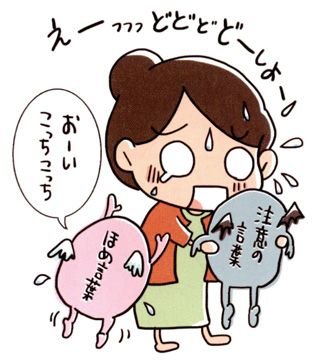
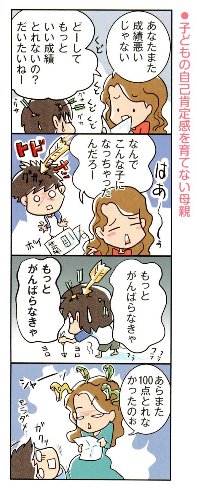
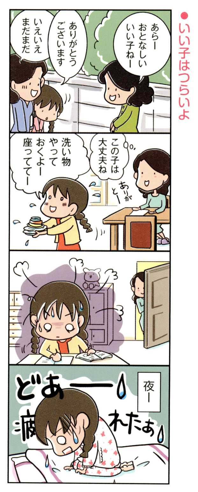
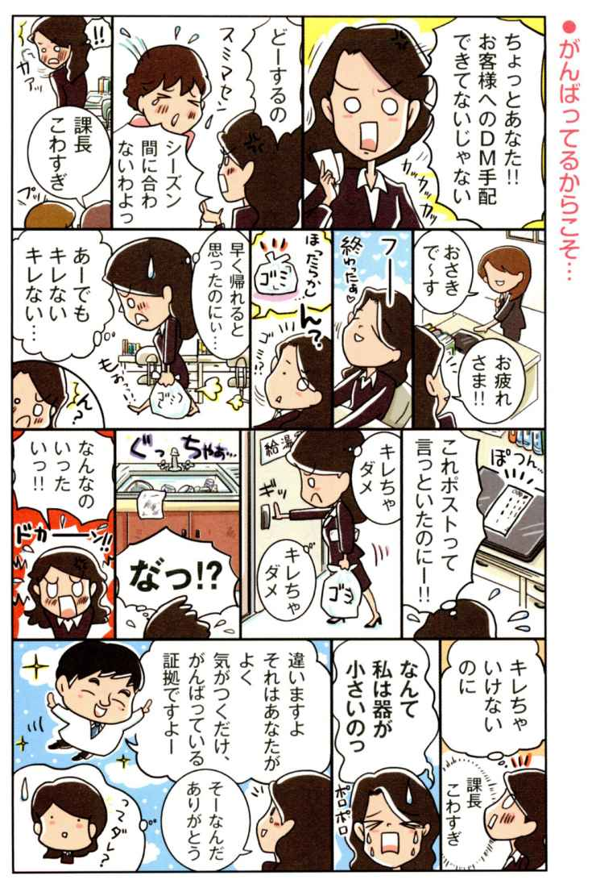
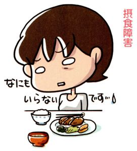
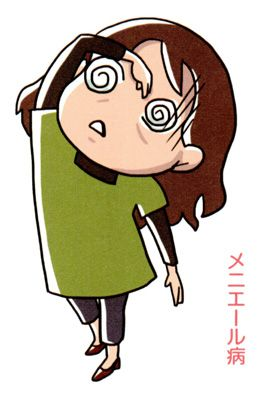
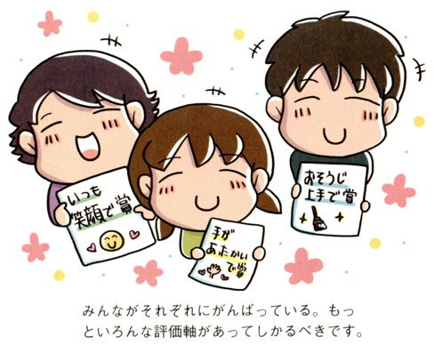

| Dr.明橋の生きるのが楽になるたったひとつの言葉 | |
| 明橋大二 | |
| (2013) | |
先日、子育て中のお母さんたちに向けた講演会でのこと、最後の質問コーナーで、こんな質問を受けました。
「小学校のＰＴＡの集まりに行っても、私は、いつも人の顔色ばかりうかがってしまって、自分の言いたいことが言えません。予定が入っているのに、ＰＴＡの仕事を頼まれると、断ることもできません。中には、言いたいことを言っているのに、友達が多くて、他のお母さんたちから頼りにされている人っていますよね。どうしたら、私も、そんな人になれるのでしょうか？」
ＰＴＡの集まりに限らず、会社でも、友達同士の間でも、いつも周りに気を遣って、何でも悪い方向にとらえてしまう人がいます。
逆に、人のことは、我関せず、人にどう思われようと、マイペースに生きている人もいます。
また、いっぽうで、人の顔色は気になるけれど、それを自分の中でよい方向にとらえて、いつも笑顔で、周りと楽しそうにやっている人もいます。
「でも、それは、その人の性格なんだから、しかたないじゃないですか。変えようがありませんよ」
そんな声が聞こえてきそうですが、本当にそうなのでしょうか。
その性格の違いとは、どこから生まれてくるのでしょうか？
さて、ここで、これからあげる例を自分に置き換えて、ちょっと考えてみてください。
あなたは、どちらのタイプでしょうか？
《Ａ子さん、Ｂ子さん、ともに30 歳です。27 歳の時から３年間つきあってきた彼氏が、突然本社から地方支社への転勤を命じられました》
Ａ子さん 「地方転勤だなんて、浮気されたらどうしよう。それに、なんでひとりで行こうとしているの？ プロポーズしてくれないの？ もしかして、私と別れたいから、転勤希望を出したとか？ 私、もう30 だし、会社だっていつリストラされるかわからないわ。この不景気だもの。転職先を探すのも難しい。それに、フラれたら、次の彼氏がいつ見つかるかわからないし、早く結婚しないと、子どもだって産めなくなるじゃない」
Ｂ子さん 「支社から本社に戻ってきた時は出世しているだろうし、これは、彼にとっての大きなチャンスね！ 私たちは３年もつきあってきたのだから、もう信頼関係はできているし、遠距離になっても、うまくやっていけるはずだわ。いつかは、彼と結婚もしたいけど、まだ30 だし、もう少しお互いのやりたいことを優先させてもいいのかな。そうだ、私も、この時期を利用して、これからずっと仕事が続けていけるように、簿記検定１級を取ろう」
次は、こんなケースです。
《Ｃ子さん、Ｄ子さん、ともに小学校３年生になる男の子がいます。学校から帰ってくると、玄関にランドセルを投げ出し、公園に遊びに行ってしまいました。ランドセルを片づけようとしたら、フタが開き、中から、60 点の算数のテストが出てきました》
Ｃ子さん 「何これ！ 60 点って、単純な計算問題も、間違っているじゃないの。
やだ、かけ算が間違っている。これから、どんどん勉強が難しくなっていくのに、こんな基礎でつまずいていたら、将来は、落ちこぼれ間違いなしだわ。だいたい宿題もやらずに公園に遊びに行っちゃって。帰ってきたら、うんと叱ってやらなきゃ。とうぶんテレビとゲームは、禁止にしましょう」
Ｄ子さん 「この間のテストは、40 点だったのに、60 点になっているわ。計算もうっかりミスで間違えているのだから、落ち着いてやればできたのよね。そうしたら、70 点は、とれていたはず。スロースターターって言葉もあるし、６割できていたんだから、まっ、いいか。あの子なりのがんばりを、長い目で見守っていきましょう」
いかがでしょうか。
同じような立場で、同じような出来事が起こったとしても、人によって、受け取り方や考え方は、こうも違ってきます。
では、どちらの考え方のほうがより幸せに生きられるでしょうか？
みなさんは、『自己肯定感』という言葉を、ご存じですか？
物ごとの受け止め方は、人それぞれに違いますが、この違いを生み出すのが、その人の中にある『自己肯定感』です。
10 年くらい前までは、教育関係者やカウンセラーなど、専門家は知っていても、一般的には浸透していない言葉でした。
ところが近年は、メディアの中で耳にしたり、目にしたりする機会も増えてきました。
しかし、まだまだ本当の意味やその大切さを知らない人が少なくありません。
『自己肯定感』は、私たちが生きていく上で、とても大切なものです。
両親も健在で、好きな仕事もしている。遊びに行く友達もいれば、没頭できる趣味もある。けれども、結婚もせずに、このまま仕事だけを続けていていいのか？ と漠然と不安を抱えている、あなた。
つきあっている彼が支配的であったり、束縛的であったり、依存的であったり......。一緒にいることにどこかで疑問を感じながらも、別れてひとりになるのが怖くて、関係をずるずると続けている、あなた。
夫、子どもにも恵まれて、端から見たら、幸せを絵に描いたような家庭の主婦なのに、なんだかわけのわからない不安を抱いている、あなた。
この不安と『自己肯定感』には、大きな因果関係があるかもしれません。
本書は、あなたの『自己肯定感』を、もう一度見つめ直し、育むお手伝いをするためのものです。
〝 生きづらい〟 と感じている人たちが、本書によって、おだやかで明るい光を見つけ、〝 生きていくことが楽になった〟 と感じられるようになることを願っています。
精神科医 明橋大二
Dr. 明橋の生きるのが楽になるたったひとつの言葉 目次
第一章
● 自己肯定感とは、自分を肯定的に評価できる気持ち。自分は、生きている価値があると思える気持ち
● 自己肯定感の高い、低いが生ずるのは、なぜか？ それは、自己肯定感が『持って生まれた性格』と『育った環境』によって、作られているからです
● 自己肯定感とは、自己の存在への自信であり、能力の自信ではありません
第二章
● 生きていることが、ばくぜんと不安なら「私は、私でいい」と、自分に言い聞かせてみよう
第三章
● 自己肯定感を育む、最も太い幹は、親子関係にある。良好な親子関係が、自己肯定感の土台になります
● 母親との関係が、人格形成や自己肯定感に、大きな影響を与えます
● 小さい時は、お父さんが大好きで、思春期になったら、しっかり反抗する。20 歳を過ぎたら、やさしくなれる関係が理想です
● 見直した親子関係を、自分の中で、どう修正したらよいのか？
● 兄弟姉妹のわだかまりは、親の思い出話を一緒になって言うと解消されます
● 自己肯定感が高くなると友人の選び方もおのずと変わってきます
● 自己肯定感が低い女性は、気がつくと、〝 ダメンズ〟 とばかりつきあっています
第四章
● キレやすいのは、弱い人間だからではなくあなたが、がんばりすぎているから
第五章
● みんなががんばっているのです。でも、がんばっている方向が、それぞれに違うのです。がんばる速度も違います
第六章
第七章
自分を肯定的に評価できる気持ち。
自分は、生きている価値があると
思える気持ち
この章では、まず、自己肯定感とは何なのかを考えていきましょう。
これは企業などで使われる『自己評価』とは、ちょっと意味合いが違います。
与えられた課題、目標が達成できた、理想の自分に近づくことができたと、チェックシートに、○ や× をつけて表すものではありません。
自己肯定感とは、その言葉通り、自分を肯定的にとらえる気持ちです。自分は生きている価値があるという気持ちです。
また、自分が愛している人、身近な人から、「大切な存在だ」「必要とされている」と思える感覚でもあります。
ひらたく言えば〝 自信〟 ですが、これは〝 自分が生きていること〟 そのものへの〝 自信〟 といってもいいかもしれません。
目に見えたり、数字に出たりするわけではなく、空気のようなもので、普段はありがたみを感じないのだけれど、失ってみると本当に苦しくて、その存在の大切さを思い知らされるものです。
また、完璧に高い人と、極端に低いゼロの人と、両極端の人がいるわけではありません。
いつも自信満々で、大きな失敗をしても、まったく落ち込まずに、次に向かっていける人なんていませんよね。
自己肯定感は、その時々によって変動します。
高い人も、大きな失敗をすれば、〝 自分は、なんてダメなんだ〟 と自己肯定感が低くなることがあります。
それでも、基本的な部分がしっかりと育っていれば、〝 自分は、ダメなんだ〟 と思う度合が、かなり違うのです。
それを次の例でご説明しましょう。
会社で大きなプロジェクトを任されたとします。毎晩残業をして、成功させようと、精いっぱいがんばったのだけれど、失敗してしまった。結果、上司からこっぴどく叱られました。
この時、Ａさんは、まずは、落ち込みます。でも、「叱るということは、自分の仕事ぶりに期待をしてくれているからだ」と、その落ち込みから立ち直れるように、考えをシフトしていきます。
いっぽう、Ｂさんは、叱られたのは仕事の出来なのに、「これで、ダメ人間のレッテルを貼られた」と、自分の全人格を否定されたように受け取って、さらに落ち込んでしまいます。
また、「君が残業して、がんばっていたことは認めるよ。でも結果が出せなかったのだから、そこは十分反省してほしい」と言われたとします。
この時、Ａさんは、〝 がんばっていた努力は、認められたんだ〟 と、それをほめ言葉として、受け止めます。
ところがＢさんは、認められた部分はスルーして、〝 十分反省してほしい〟 という注意の言葉だけを10 倍くらい重たく受け止めてしまいます。

一般的に、たとえば虐待を受けて育った子どもは、自分の存在価値が認められず、自己肯定感が低くなると言われています。
子どもにとって、〝 お前なんか産まなきゃよかった〟 〝 お前はいらない人間なんだ〟 と親から言われながら大きくなることが一番辛いことです。
自分の存在価値を認められず、自己肯定感が低くなってしまうのも無理はない気がします。
しかし、ごく普通の家庭に育ち、親に愛情をかけてもらい、ちゃんと教育も受けてきたはずなのに、自己肯定感が育つ場合とそうでない場合があるのは、なぜなのでしょうか。
低い人がいるのは、なぜか。
それは、自己肯定感が『生まれ持った性格』と
『育った環境』によって、作られているからです
昔の人は、「氏より育ち」と言いました。家柄や身分よりも、育った環境やしつけのほうが、人間の形成に強い影響を与えるというのです。
この「氏」を、その人が生まれ持った性質とするなら、今、人間形成は、「氏より育ち」ではなく、「氏も育ちも大切」と言われています。
兄弟、姉妹でも、おのおのの性格が違います。
家庭の中で大きな問題が起こった時に、兄は前向きな解決策を見つけようとしているのに、弟は悲観的にとらえて、ただただ落ち込んでしまう、など同じ親から生まれ、同じように育てられたのに、どうしてこのような違いが生じてしまうのでしょうか。
それは、持って生まれた性格と、育つ環境（親子関係だけでなく、友人関係など、その人をとりまく生活環境）によって、人格形成がなされるからです。
また最近、精神医学の中で注目されているのが、その人間がどのくらいレジリエンス（逆境乗り越え力）を持っているかということです。
親から 酷 い虐待にあって大人になったとしても、犯罪に走る人もいれば、精神的な病気になる人もいます。逆に、その逆境をバネにして、たくましく生きていく人もあります。
そうした違いは、その人の持って生まれたレジリエンスが、性格形成に関係しているのではないかと、研究されているのです。
つまり、生まれながらにレジリエンスを強く持っている人は、生まれながらにポジティブ思考ですし、自己肯定感も高くなります。
しかし、先にもお話ししましたが、「持って生まれた性質」だけではなく、「育った環境」も人間形成に大きく影響しますから、生まれ持ったレジリエンスが弱くても、それを強くすることは可能なのです。
その最たる方法が、親から愛され、存在を肯定されることです。
親から、いっぱいの愛情を受けて育った子どもは、逆境を乗り越える力が、自然と身についていくでしょう。
では、大人になってからでは、手遅れなのでしょうか。
そんなことはありません。
本来は、赤ちゃんから大人へと育つ過程でレジリエンスをつけていくことが理想ですが、すでに大人になってしまっても、身につけることはできます。
たとえば、何でもネガティブにとらえてしまう人というのは、物ごとを０か１００かでとらえる傾向にあります。
ところが世の中は、０でもなければ１００でもない、50 とか60 のグレーゾーンもあり、成り立っているものです。
０か１００かの世界というのは、たとえて言うなら『水戸黄門』のような勧善懲悪の世界のことでしょうか。
悪人は、１人の善人を殺しただけでも、極悪人。
ところが、善人は、50 人悪人を殺しても１００人殺しても善人。
こんなふうに、悪人と善人をスパッと分けられると、スカッとするし、わかりやすいですよね。
しかし、実際の世の中というのは、そうではありません。
悪人にだって家族がいるし、死んだら悲しむ人もいます。
また、善人だって、時には悪いことをするかもしれません。
そう考えると、あまりスッキリしませんが現実世界はそうなのです。
ところが、この水戸黄門のような世界を、対人関係やものの見方に持ち込むと、非常に生きづらくなります。
信用していた人、愛していた人に、少しでも悪い部分が見えたりすると、裏切られたと思う。
でも、人間ですから、時には、相手が傷つくようなことをペロッと言ってしまったり、意地悪をしてしまったりすることだってあります。
それを、オセロゲームのように、ことあるごとに、白くなったり、黒くなったり、クルクルと裏返っていたら、対人関係はとても不安定になってしまいます。
こんなふうに、０か１００かの思考を持っていると、人間関係や物ごとのとらえ方が、善か悪かにクルクル変わるので、精神的に非常に不安定になり、善だと思えば依存的になるし、悪だと思えば、攻撃的になりがちです。
こうした考え方が、どんどん強まると、ボーダーライン（境界性人格障害）と言われるパーソナリティ障害になることもあります。
でも、本来、対人関係も、物ごとも、白や黒で分けられるものではありません。
白いところもあれば、黒いところもある。
真ん中には、グレーゾーンもある。
そう考えれば、嫌なところが見えても、〝 まあ、これもアリだよね〟 と思えるのではないでしょうか。
０か１００か。白か黒か。
そんなふうに極端に考えてきた人が、〝 グレーもアリだね〟 と見方を変えることによって、ストレス耐性が身についていきます。
このストレス耐性を身につける（自分に認知させる練習や訓練をしていく）ことによって、何か失敗をしても、上司からこっぴどく叱られても、信じていた人に裏切られたとしても、傷つく度合が少なくなるのです。
そうすれば、生きるのが少し楽になりますよね。
ひいては、それが自己肯定感を高めることにもつながっていきます。
自己の存在への自信であり、
能力の自信ではありません
ものすごい努力家やがんばりやが、水戸黄門の勧善懲悪、オセロゲームの０か１００かの世界観の中で生きていたら、どうなるでしょう。
スポーツ選手を例にとって考えてみましょう。
生まれながらに身体能力が高くて、走るのが速かったり、泳ぎがうまかったりすると、周りから、その能力を賞賛されます。
ところが自己肯定感が育っていないと、周りから賞賛された能力を、自分の存在価値に置き換えていきます。
そこをがんばっていれば、みんながほめてくれるし、自分を認めてくれるので、ますます努力します。
辛い練習もなんのその。
そのうち、スポーツで成績を上げることが、自分の存在価値のすべてになってしまうんですね。
でも、これは、とても危うい生き方です。
周りが期待するような成績が上がらなかった時に、自分の存在価値を失ってしまうからです。
華々しくメディアに取り上げられていたスポーツ選手が、怪我や故障で不本意な引退をした後に、薬物でつかまったり、詐欺や恐喝などで新聞に載ったりするのは、そんなひとつの例だと思います。
スポーツに限らず、勉強でもそうです。
勉強ができて、学年でトップの成績を常にキープしているけれども、その割に自己肯定感が低い人があります。
そういう人が、進学校に進めば、そこには、自分と同じトップの成績の子がごろごろいます。

勉強をしても、しても、成績は思ったように上がらなくなり、さらに、大学受験に失敗をしたら、もう自分の存在価値を見失ってしまいます。
私は、富山県のスクールカウンセラーも務めているのですが、「学年でトップの子の中にも、精神的には危うい子がいるんですよ」という話を、よく小学校や中学の先生たちの前でしています。
実際、学校で子どもたちに、自分の存在価値についてのアンケート調査をすると、『まったく生きている価値を感じない』という子が、全体の３パーセントくらいいて、その中には、成績がトップクラスという子が、ときどき入っているのです。
成績は最上ランクなのに、自分の生きている価値は、最低ランク。
そういう子の家族関係をたどってみると、親子関係にいろいろ心配な要因が見えてくる場合が多いのです。
親が忙しくて、子どもに無関心だったり、逆に過度に親が成績に固執していたり。
そうすると、子どもは、一生懸命に成績を上げることで、親や周りから認められようとします。
すごく無理をして、背伸びをした生き方をしてしまうのです。
勉強ができて、学年でいつもトップの成績をキープしている。
何か得意なスポーツがあって、その成績が周りよりも秀でている。
本当に素晴らしいことです。
でも、それは、生きている価値とイコールではありません。
それは、能力への自信です。
能力への自信の土台を作っていくのが、〝 私は、家族に愛されている〟 〝 生きている価値がある〟 という、自己の存在への自信なのです。
自己の存在への自信とは、自己肯定感です。
どんなにりっぱな家も、土台の基礎工事を怠ると、長年住んでいた時にゆがみがきたり、地震で倒壊したりしますよね。
いくらりっぱな能力への自信を積み上げたとしても、その下の土台である存在への自信（自己肯定感）がなければ、アクシデントに見舞われたり、壁にぶつかったりした時に、もろく崩れてしまうことがあるのです。
逆に土台がしっかりしていれば、どんな逆境に立たされたとしても、「なにクソ」と、立ち向かっていけるのではないでしょうか。
自己肯定感が、いかに大切か、おわかりいただけたでしょうか？
では、次の章で、さらに掘り下げてみましょう。
ばくぜんと不安なら
「私は、私でいい」と、
自分に言い聞かせてみよう
前章で、自己肯定感について、おおよその意味をお話ししてきました。
この章では、さらにもう少し踏み込んで、自己肯定感がどのように育つのか、お話ししたいと思います。
確かに親から虐待を受けたり、放置されていた場合は、子どもの自己肯定感は育たない、ということは比較的わかりやすいと思います。
ところが、親が子育てに強い関心を持ち、教育熱心、習い事もたくさんさせてくれて、運動会や遠足など、学校のイベント時には手の込んだお弁当を作ってくれた。
そんな親のもとで育ち、希望通りの学歴や経歴を身につけて、ちゃんと仕事についていたとしても、自己肯定感が十分育っていない場合があるのです。
それは、なぜなのでしょうか？
そのわけを知るには、まず、自己肯定感がどのように育つのか、ということをよく知る必要があります。
実は、自己肯定感というのは、自分のいいところをほめてもらうだけではなく、自分の悪いところ、ダメなところ、あるいは、怒ったりだだをこねたり、いわゆるマイナスの感情もすべて受け入れてもらうことによって、はじめて育つものです。
要するに、自分のいいところも悪いところも全部ひっくるめて受け入れてもらうことで、はじめて育つのが、自己肯定感です。
「いや、そんな悪いところまで受け入れていいのか」と思われるかもしれませんが、大人のことを考えてもらってもわかると思います。
たとえば、彼氏と彼女、恋人同士で、「私の彼氏は、自分のいいところ、彼氏にとって都合のいいところは受け入れてくれるけれども、自分の悪いところ、彼氏にとって都合の悪いところは受け入れてくれないで、拒絶される」
そういう関係であって、果たして安心してつきあえるでしょうか？
逆に、「私の彼氏は、自分のいいところもダメなところも全部受け入れてくれる、理解してくれる、愛してくれる」それではじめて安心してつきあえる、ということがあると思います。
お父さんもそうです。しっかり働いて給料を家に入れているうちは、ちゃんと玄関から家に入れてもらえるけれど、リストラにあって、給料を稼がなくなった途端に、家に入れてもらえなくなる、放り出されてしまう。
それが果たして家族と言えるのか、ということです。
そうではないと思います。家族というのは、お互いのいいところもダメなところも全部受け入れ合う、支え合う、それが家族というものだと思います。
ところが、親も教育熱心で、子どももそんな親の期待にこたえて、それほど反抗もせず、いわゆる「手のかからないいい子」で育ってきた場合は、「自分のいいところをほめてもらった」という経験はしていますが、「自分の悪いところ、ダメなところも、受け入れてもらった」という経験をしていません。
そしてもし、そういうダメなところを出したら、その途端に自分は嫌われるのではないか、見放されるのではないか、という不安を持っているのです。
親からすれば、そんなことするはずないじゃないか、ということなのですが、子どもからすると、ダメなところを受け入れてもらった経験がないので、安心できません。
ということは、本当の自分に対しては、少しも自信が持てていない、ということになります。そういう意味で、いわゆる手のかからない、いい子で育ってきた子は、たとえ学校の成績がよくっても、親からみて自慢の子どもであっても、自己肯定感は決して十分育っていない、ということがあるのです。
すべての親がそうだとは言いきれませんが、子育てに熱心な親ほど、子どもに期待をしています。
子どもがどんな結果を出してくるかが気になります。
親にとっての〝 いい子〟 は、親の理想通りに育ってくれた子です。
ですから、〝 勉強やスポーツや習い事〟 、など子どもに期待していることで、いい成績やいい結果を出してくれば、うんとほめるでしょう。
しかし、成績が下がったり、結果が出なかった時には、落胆した顔で、「なんでこんな結果しか出せないの！」と不満を言うでしょう。
そういう親の表情を敏感に察知する子は、「親の期待を裏切ったら、親を苦しませる。自分は嫌われる」と思ってしまいます。
このように、親の理想通りに育っていればほめられて、理想からはずれたとたん落胆される、という対応では、子どもの自己肯定感は、十分育たないことがあるのです。
また、兄弟（姉妹）を同じように育てたいという思いから、ついつい比べてしまう場合もあります。
姉は、飛びぬけて勉強ができるのに、妹は、勉強が大嫌い（逆のケースもありますね）。
ことあるごとに、親から、「お姉ちゃんを見習いなさい」「お姉ちゃんは、こうよ」と言われて大きくなった妹は、常に人と自分を比較して嫉妬したり、人の顔色をうかがってイジケたり、自分にダメ出しをするようになるかもしれません。
では、優秀だったこの姉の自己肯定感は、きちんと育ったのでしょうか？
姉は姉で、成績を上げることで、親や周りに認めてもらおうと、いつも気が抜けず、いい子を演じて大人になります。
そういう人は、一見、何の問題もなさそうに見えます。
会社でもそれなりに評価をされたり、結婚をしたり、子どもにめぐまれて、はたから見たら幸せそうです。
でも、いつもいい子を演じ、背伸びをしているような状態です。もし自分ががんばらなかったら、ダメなところを出したら、その途端に嫌われる、見捨てられる、という不安をいつも持っていますから、精神的にとても不安定ですし、がんばりすぎて疲れています。
こうした優等生タイプの人は、職場で自分の仕事ぶりを否定する同僚とは、断絶してしまったり、ちゃんと仕事をしない同僚に対して、激しい怒りがわいたりします。
上司に叱られると立ち直れないくらい落ち込んでしまうこともあります。
先にも書きましたが、自己肯定感とは、「良くても、悪くてもＯＫなんだよ」「ダメなところを出しても大丈夫だよ」というメッセージをたくさんもらってはじめて育つ感覚です。
とはいえ大人になった今では、親からそのメッセージを受け取ることは、難しいですよね。
ではどうすればいいのか。
私はまず、自覚すること、そんな自分に気づく、ということが出発点だと思っています。小さい時から、親の期待にこたえようとがんばってきた、自分のダメなところを出しちゃいけない、と思ってきた、今も、どこかでそんなふうに思って、がんばり続けている、そこに気づくことが出発点です。
そしてそれに気づいたならば、本当にそこまでがんばらないと、周りは受け入れてくれないのか、本当に嫌われてしまうのか、見放されてしまうのか、冷静に考えてみましょう。
周りの人で、あなたほどがんばらなくても、失敗続きでも、周囲から受け入れてもらっている人もいると思います。「いや、あの人は性格がいいから大丈夫なだけ」「あの人は、上司から気に入られているから大目に見られているだけ」「私が同じことをやったら、絶対嫌われる」と思っているかもしれませんが、果たしてそうでしょうか。
意外と周囲の人は、あなたに対して「いつもとてもがんばってくれるから助かるな。でも、そこまでがんばらなくてもいいのに。あれだと、疲れがたまらないか心配だ」と思っているかもしれません。
でもそれを言葉にしても、あなたは、「いえ大丈夫です」としか言わないし、何度も言うとまたあなたを否定するみたいになるから、言わないだけかもしれません。
そんな時、自分のダメなところを出したら、あなたは、「もうこれで私はおしまいだ、絶対みんなから相手にされなくなる」と思うかもしれません。
しかし周囲は案外、「ああ、こんなふうに失敗することもあるんだ。いつも完璧だから逆に心配していたけど、そういうふうに人間らしいところもあって、ちょっと安心したよ」と思うかもしれません。
生きることに疲れるということは、それだけあなたがみんなのために、毎日がんばってきた証拠です。
だから、たまには、自分へのごほうびで、自分を休ませてあげても、誰も文句は言わないのではないでしょうか。
実は、この「良くても、悪くてもＯＫなんだよ」「生きていていいんだよ」というメッセージは、ほとんどの人が、０歳から３歳くらいまでの赤ちゃんの時に親から受け取っています。
ウンチたれまくり、夜中にギャーギャー泣いても、親は、おむつを替えてくれましたし、抱っこして、「よしよし」と、あやしてくれました。
やりたい放題やっても、かわいがられる。
親に都合の悪いことをやっても、見捨てられない。
そうした安心感の中で、赤ちゃんは、すくすくと大きくなっていくのです。
でも、このころのことは、私たちは覚えていません。
先日、初孫ができたという知人が、私に言いました。
「孫がこんなにかわいいとは、思わなかったよ。親じゃないから、りっぱな子に育てないといけないとか、そんな気負いもない。だから、孫が何をしても、すべてがいとおしいんだよなぁ～」
私は、この言葉を聞いて、「良くても悪くてもＯＫ」という世界は、祖父母が孫を無条件で猫かわいがりする感覚に似ているかもしれないと思いました。
そして、ものごころがつく３歳くらいになると、しつけやルールの世界に入っていきます。これは、〝 していいこと〟 と〝 悪いこと〟 がある、○ か× かの世界です。
良いことをしたら○ 、悪いことをしたら× 、がんばっていたら○ 、怠けていたら× 、という具合です。
しかし、その○ か× かの世界がちゃんと身についていくためには、その前提として、○ でも× でもＯＫという世界をきちんと通ってくる必要があるのです。
その土台がちゃんとできていないと、しつけやルールで、× がつくと、それイコール存在価値を失うことになってしまうからです。
この土台が育つために、私が注目しているのが、「甘え」の重要性です。
今の30 代から40 代の人たちは、実は、親に十分甘えることをよしとされていなかった世代です。
赤ちゃんとして生まれた時は、「抱き癖をつけてはいけない」という風潮が、全盛期でした。
アメリカ流の、「早く自立を促す」考え方に基づいて、親から強制的に離され、授乳も泣いたからといって与えてはいけない、と制限されました。
そこからはじまって一事が万事、「早く自立しなさい」「甘えてはいけない」、ずっと「がんばれ」「がんばれ」と言われ続けてきたのではないでしょうか。
しかし、本当に自立させようと思うなら、この「甘え」を否定する考えは、むしろ逆効果だったのです。
なぜなら、自立のもとになるのは意欲です。
意欲のもとは、安心感です。
その安心感が、どこから生まれてくるのかというと、「親に十分に甘えた」経験から生まれてくるのです。
「甘えない人が自立する」のではなく、「十分甘えた人が自立する」のです。
逆じゃないか、と一般には思われていますが、大人になって、自立につまずいたり、ひきこもったり、依存症になったりする人を見てみると、子ども時代、甘えていい時に、十分甘えていなかった人が多いのです。
ですから、子どもの心が自立していくために、子ども時代の甘えというのは、本当に大切なものなのです。
決して否定すべきものではありません。
ところが、このように言っても言っても、世間では、「甘えはダメ」「甘えてはいけない」と誤解している人ばかりです。
どうしてそのような誤解が生ずるのかというと、その大きな原因は「甘え
させる」と「甘やかす」の違いを知らないことによります。
「甘えさせる」は、一言で言うと、子どもの「情緒的な要求」を受け止めることです。
「抱っこして」とか、「お話聞いて」とか子どもがわんわん泣いている、その時にちゃんと対応すること。
それは、「甘えさせる」で大切なこと、必要なことです。これはいくらやっても、「甘やかす」にはなりません。
逆に、「甘やかす」とは、子どもの「情緒的な要求」ではなく、「物質的な要求」に、子どもが言うがままに与えていくことです。「お菓子ちょうだい」とか「おもちゃ買って」とか、「お金ちょうだい」という子どもの物質的な要求に、子どもの言うがままに与えていくことは、「甘やかす」で、よくありません。
ですから、子どもの情緒的な要求にはしっかりこたえて、その代わり物質的な要求はきちんと制限していくことが大事です。
ところが今の世の中、これがともすれば逆になっています。
親も忙しすぎて、子どもの情緒的な要求にはこたえきれない。
その埋め合わせに、日曜日にショッピングセンターへ連れて行き、好きなものを何でも買ってしまう。
あるいはじいちゃんばあちゃんに連れられて、何でも買い与えられてしまう。そのように育てられると子どもはどういう子になるかというと、自分の心の淋しさを物で埋めようとする子になってしまいます。
それが、将来、ある種の依存症に発展してゆくことがあるのです。
たとえば、過食症というのは、自分の心の淋しさを、食べ物で埋めようとする病気です。
買い物依存症は、自分の心の淋しさを、ブランド物とか、バッグ、宝石で埋めようとする病気です。
ところがこういう病気は、食べても食べても、買っても買っても本当の満足は得られません。
それはなぜかというと、本当に求めているものは、「甘えを受け止めてほしい」「愛情をかけてほしい」「情緒的な要求を受け入れてほしい」ということだからです。
ですから、「情緒的な要求を受け入れる」という意味での「甘えさせる」甘えを受け入れることは、とても大切なことなのです。
子どもだけでなく、大人にとっても、甘えは大切なものです。決して否定すべきものではありません。
たとえば、相手の人に好意で、何かしてあげたいと申し出るとします。
そういう時に、「いや、自分でやりますからいいです」と言われたらどうでしょうか。
少し淋しい感じがしますし、そこで関係は切れてしまいます。
ところが逆に、「そうですか、ありがとうございます。ではお言葉に甘えさせていただきます」と言われたら、どうでしょうか。
こちらもうれしいですし、相手も助かります。
そして、双方の関係はここでぐっと深まります。
「甘え」というのは、心と心の接着剤なのです。
私たちは、人に甘えることを、相手に負担をかけること、迷惑をかけることだと思っています。
しかし逆の立場ならどうでしょうか。
相手が甘えてくれたら、うれしいし、相手が自分を信頼してくれたことに少し自信が持てるようになります。
その上に、してあげたことに、「ありがとう」と言われたら、さらに自己肯定感が高まります。
もちろん過度の甘えは、相手に負担や迷惑をかけることになりますが、適度な甘えは、むしろ、信頼関係をつなぎ、互いの自己肯定感を高めることになるのです。
また、読者のみなさんの世代は、「甘え」が許されなかっただけでなく、「体罰も、しつけと称されて、今よりずっとあったと思います。
現在、日本においては、学校における体罰は法律で禁止されていますが（法律で禁止されているのに、これだけ学校で体罰が横行しているのが本当に不思議なことですが......）、いっぽうで家庭における体罰は禁止されていません。
しかし、私は、家庭も含めて、子どもに対するすべての体罰を法律で禁止してもらいたいと強く思っています。
体罰は、子どもの心の成長にどういう影響を与えるか、実はこれについては、すでに結論が出ています。
体罰は子どもの心の成長に決してよくありません。
２００２年、アメリカのガーショフという人が、過去88 件の研究を通して、体罰の影響について調査をしました。
その結果、体罰を受けた子どもは、「その時は言うことを聞くようになる」という一時的な効果は見られましたが、長期的に見ると、「攻撃的になる」「反社会的になる」「精神疾患を発症する率が上がる」などのさまざまな副作用が出ることが明らかになりました。
もちろん「リスクが上がる」ということなので、体罰を受けた人がみな、そのような結果になるわけではありません。
でも、そのようなリスクが上がることは、はっきりしているのです。
薬のことを考えてもらってもわかると思います。
「この薬は、一時的には効果があるけれども、長期的に飲ませると、子どもにいろんな副作用が出てくる」という薬を果たして子どもに飲ませるでしょうか。
体罰も同じだと思います。
体罰はまた、子どもの自己肯定感を育てません。
なぜなら、体罰の背景にあるのは、子どもへの不信感だからです。
体罰を行う人がよく言うセリフがあります。
「口で言ってもわからない者には、体で知らせるしかない」
しかしこれは、犬や猫と同じ扱いではないでしょうか（いや、犬や猫相手でも、最近は体罰は使わないと聞きます）。
子どもは、口で言えばわかります。
確かになかなか言った通りにできないこともありますし、できるようになるのに、少し時間が必要な場合もあります。
しかし繰り返し真剣に伝えれば、必ず子どもは理解するし、できるようになります。
体罰が行われる場面で本当に欠けているのは、子どもの理解力や良心ではなく、大人の忍耐であり、自制心であり、さらに言えば、子どもへの信頼ではないかと思います。
平成25 年１月、女子柔道の選手たちが、監督の体罰を告発しました。
彼女らが何が不満だったのか、何に傷ついたのかというと、それは身体的な暴力というより、〝 世界のトップアスリートとしての自分たちの自覚を監督が信頼していない〟 ということだったのではないでしょうか。
すでにそれまで、彼女たちなりに自己管理をし、自己研鑽をしてきた、そのプライドを、監督の体罰が決定的に傷つけたのです。
ですから、スポーツにおいても、教育においても、子育てにおいても、私は体罰は全面的に禁止すべきだと思っています。
実際、世界でも、子どもに対する体罰を全面的に禁止した国が、平成25 年２月現在、33 か国に上っています。
その数は、さらに増えつつあります。日本においても早く体罰禁止の法律が成立することを願います。
自己肯定感がかかわっています。
よくこんな質問をされます。
「ウチの子どもは、内気で、人とかかわるのが苦手です。
他のお子さんは、大勢で仲良く遊んでいるのに、ウチの子だけ教室にひとりでいます。
もっと対人関係をよくするのには、どうしたらいいでしょうか？」
そんな時、私は、決まってこう答えます。
「その子、その子の個性があります。人と遊ぶのが好きな子もいれば、ひとりで本を読んでいるほうが好きという子もいる。
ひとりでいるのが好きな子に〝 ひとりでいちゃダメでしょ〟 と言ったら、余計に人づきあいが苦痛になります。
そんな時にかける言葉は、〝 大勢のお友達と遊べないとダメ〟 ではなく、〝 そんなあなたの存在も、みんな認めているから大丈夫〟 という言葉なんですよ」
ひとりでいることが好きな子に、〝 ひとりでいることは、よくないこと〟 という価値観を押しつけたら、その子が苦しくなるだけです。
自己肯定感は、育ちません。
そのまま大人になると、人から言われることをネガティブにとるようになります。
ちょっと相手が注意してきたことも、人格を全面否定されたように受け取ってしまいます。
そうなると、人づきあいがどんどん怖くなっていきますし、人が遠くで笑っているのを見ても、自分のことを笑っているんじゃないかと、被害妄想に囚われるようになります。
また、自己肯定感が低いと、人と交渉ごとをしたり、人に頼みごとをするのがとても苦痛になります。
自分の存在は、相手をいやな気持ちにさせるのではないかと思っているからです。
反対に、頼みごとをされたら断れないので、やっかいなことも全部引き受けることになります。
頼む、頼まれるのギブアンドテイクがうまくできないと、相手の要求ばかりを受け入れることになるので、かかわれば疲れるし、だんだんとかかわるのが億劫になってきます。
結果、人づきあいを避けるようになり、さらに人づきあいが困難になっていくのです。
人とかかわるのが苦手な子に、「それではだめ」と否定し続けると、自己肯定感が低くなります。そうすると、さらに人とかかわるのが苦手になります。
むしろ必要なことは、「そんなあなたもＯＫだよ」と自己肯定感を育んでいくことです。それが、その子なりのコミュニケーション能力を育てることになるのです。
自己肯定感を育む「ツッコミ」力
関西は、ボケとツッコミの文化と言われます。だいたい、ふたりで話していると、ボケとツッコミに分かれますし、そういうことから、大阪市に転入する時は、住民票に、男か女かという性別と同時に、ボケかツッコミか、どちらかに○ をつけることになっています。（嘘です）
ところで、私は、自己肯定感を育てる上で、このツッコミ、というのが、とても重要だと思っています。
というのは、ツッコミというのはどういうものかというと、相手の欠点を指摘して、それを笑いに変える技なのです。
たとえば、ボケ役の人が、えらそうにうんちくを垂れているとします。そこでツッコミ役の人が、「こんなこと言うてますが、この人、裏ではこんなことしてますんやで」「こないだなんかな、こんなことまでしてはりましたんやで」と笑いをとります。
ツッコまれたほうは、本当は隠しておきたい裏の自分を暴かれて恥ずかしい思いをしますが、それをみんなが笑ってくれたことで、受け入れられたと感じます。
実際、ツッコまれると、恥ずかしいと同時に、ほっとした安心感を覚えるのです。
それは自分のいい部分だけでなくて、ダメな部分、ヘンな部分までみなに受け入れられたと感ずるからだと思います。
自己肯定感を育てる「ツッコミ力」、次の本はこれにしようかと思っています（笑）。
最も太い幹は、親子関係にある。
良好な親子関係が、
自己肯定感の土台になります
ここまで読んでこられた方は、自己肯定感が育つのに、持って生まれた性質とともに、育った環境がいかに大切か、おわかりいただけたと思います。
この章では、さらに自分という人間がどうやって作られてきたのか、なぜ今のようなものの考え方や、とらえ方をするようになったのかを掘り下げてみましょう。
より明確に整理するために、これまで深くかかわってきた（また、現在、かかわっている）人たちとの関係をたどる相関図を作ってみるといいと思います。
では、まず最初に、漫画のケースを一緒に見ていきましょう。
《Ａ子さん》のようなパターンは、親との関係が良好です。
自己肯定感もキチンと育っているような気がします。
高校生で妊娠するのは、一般的には早いように思いますが、将来をともにできる男性と巡り会えたのでしょう。
ご両親は、高校をやめて出産することに、最初はもろ手をあげて賛成できなかったかもしれません。
でも、娘のありのままを受け入れているからこそ、授かった命を尊く受け止めたのだと思います。
Ａ子さんは、結婚も出産も両親から祝福され、子育ても母親がサポートしてくれました。
そうした環境にいたから、出産後に、もう一度自分の人生を見つめ直し、子育てをしながらも、学ぶことが選択できたのだと思います。
いっぽう《Ｂ子さん》のケースは、10 代で妊娠、出産する女の子のもっともありがちな例です。
父親は家庭内で暴力をふるい、母親と娘はケンカばかりしていて、親からは十分な愛情をかけてもらえず、自己肯定感が育たないままに思春期を迎えました。
こうした環境で育つと、いつも心は淋しく、やさしくしてくれる男性に、ホロッときてしまいます。
言われるがままについていき、言われるがままに体の関係を持ちます。
男性から見捨てられることが怖いので、避妊しないセックスを強要されても、断ることができずにそれを受け入れ、妊娠してしまいます。
でも、中絶するお金もないので、そのままなし崩し的に生活していると、中絶できる時期は過ぎ、臨月が来て出産します。
ところが、子どもが生まれても、親は、彼氏のことも、結婚も、子どもも認めてくれません。
いっぽう彼氏にも、家庭を築いていくという自覚も責任感もなく、Ｂ子さんは、ひとりぼっち。経済的にも困窮していきます。
母親も、子育てをまったくサポートしてくれませんし、頼るところはどこにもありません。
Ｂ子さんは、辛さを全部ひとりで抱え込み、日々の育児に追われ、心身ともにどんどん疲れていきます。
イライラが 鬱積 して、いっぱいいっぱいになり、そのイライラのはけ口を幼い子どもにぶつけるようになります。
これが、子どもへの虐待につながっていきます。
《Ｃ子さん》のケースは、母親が、自分の夢や理想を子どもに重ねているパターンです。
母親にとって、自分の言うことを聞く子がいい子です。
言うことを聞いているいい子の時は、ほめまくるけれど、言うことを聞かないと、とたんに厳しく叱責をします。
こうやって育てられた子どもは、自己肯定感の土台ができていないのに、英才教育で培われた能力への自信だけを積み重ねていきます。
ですから、壁にぶつかった時に、一気に自信を失い、心身症の症状が出てきてしまいます。
《Ｄ子さん》は、スポーツで優秀な成績を修めることを自己の存在価値として生きてきて、それに挫折した時に、非行に走ったケースです。
悪い方向に行く子どもを、親は最初のうちは、とにかく叱ります。
でも、叱れば叱るほど、子どもは非行に走っていきます。
警察に補導をされ、引き取りに行くのだけれど、帰路の車中には重たい空気が流れて、ふたりともそっぽを向いて沈黙。
補導も、度重なってくると、母の中にも葛藤が生まれてきます。
〝 昔は、あんなにがんばり屋だった子が、なぜ？〟
それでも、やっぱりわが子は見捨てることはできず、葛藤を繰り返していくうちに、「どうしてこの子が、こんなことをするようになったのか」子どもの行動の奥にある、子どもの気持ちを考えるようになってきます。
すると娘のほうも、
〝 親が、こんな私を受け入れてくれた〟
〝 こんな私でも、親は愛してくれるんだ〟
ダメな部分も親が受け入れてくれたことで、安心感が生まれます。
自己肯定感の育ち直しがなされ、次第に立ち直っていきます。
〝 私は、生きている価値のある人間なんだ〟
やがてＤ子さんは、次の夢に向かって少しずつ歩き出すようになります。
非行に走る子供たちを立ち直らせるのは...
子どもが「非行」に走ったというと、「今時の子どもは...」という言葉と同時に、言われるのが「親の育て方がなってないから...」という言葉です。
でも私は、子どもが非行に走った親とたくさん話をしているうちに、決してそんな単純なものではないと感ずるようになりました。もちろん親である限り、子どもの成長にまったく無関係ということはありませんが、しかし親の育て方だけで、子どもの成長が決まるわけではないのです。
いわゆる「普通」の家庭で育った子どもでも、たとえばもともと感受性が強くて、人一倍敏感なところがあった、学校に通ううちに、友達のいじめや、先生の体罰にあい、とても傷ついた。でもそれをストレートに親に言えなくて、ただイライラを親にぶつけるうちに親との関係もぎくしゃくして、だんだん家に居場所がなくなった、そのうちに、同じような友達とつるむようになって、度々警察のやっかいになるようになった、そういういきさつも少なくありません。ひとつ歯車が狂ったために、その後どんどん悪循環がエスカレートしていったというケースがほとんどです。
しかしそれだけに、親が周りのサポートも得て、子どもの気持ちを理解し、真剣に子どもに向かい合うようになると、子どもも必ず立ち直ってきます。
非行に走った子は、自分が悪いことをしているというのはよくわかっています。それでも、強がりとか、不安のために自分でなかなかブレーキをかけられなくて、やめることができないでいるのです。そんな時に、「こんな自分でも受け入れてくれる人がいた」「見捨てられなかった」という体験をすることが、何よりも立ち直りのきっかけになっています。
「まずは、いいところも悪いところも全部一旦受け止めることが大事」
そのことを、誰よりも知っているのが、子どもの「非行」と向き合ってきた親たちではないかと思います。
さて、優等生編は、どうでしょうか。
《Ｅ子さん》のケースは、自分の存在価値を、〝 成績が優秀であること〟 〝 優等生であること〟 に、見出していました。
どちらかというと親との関係も成績がいいとか、表面的なところだけでかかわっていたのかもしれません。自分が成績を上げることで親に認めてもらおうと、一生懸命に背伸びをしてきたのでしょう。
ダメな自分を親に認めてもらった経験がないままに大人になって、社会に出たのだと思います。
勉強は、がんばれば、その結果が点数に表れます。
努力次第で、ある程度希望していた学歴を手に入れることができます。
でも、社会に出てからは違います。
希望通りの会社に就職できたとしても、そこには、上司や同僚との人間関係があったり、会社の都合で、意にそぐわない部署に配属されたりすることもあります。
その時に大切なのが、自己肯定感の土台です。
たとえ、思い通りにならなくても〝 私なら、大丈夫！ きっといつかは挽回できる〟 と思えるか、「もう自分はおしまいだ」と絶望してしまうのか、そこには、やはり自己肯定感がかかわっているのです。
最後に《Ｆ子さん》ですが、今、子育てで深刻に悩んでしまう人の中には、Ｆ子さんのような人が多いように思います。
F 子さんは、上が姉、下が弟の３人きょうだいの真ん中です。
子ども時代は、お姉ちゃんみたいに叱られないようにと、言いたいことを親に言えないまま、いい子を演じています。
弟をかわいがると、親もほめてくれるから、よく面倒を見ます。
お姉ちゃんは、母親に反抗的で、相変わらず母親とは仲が悪いのだけれど、弟は、好き勝手やっても、なぜか母親からかわいがられている。
なんだか腑に落ちないものを感じながらも、自分はしっかりしなきゃ、と思いながら大人になって、結婚をします。
そして、男の子を産みます。ところが夫は、子どもが生まれたとたん、自分（妻）のことはほったらかしで、男の子ばかりをかわいがります。
自分は、こんなにがんばっているのに、夫は認めてくれない。
そんな思いが、次第に過去の自分と重なり合っていきます。
〝 弟は、何もがんばらなかったのに、お母さんから認められ、かわいがられた〟
そんな日々の中で、子どもがいたずらをするので叱ると、夫は、
「おまえ、そんなことで叱るなよ。まだ赤ちゃんじゃないか」
と、子どもの肩を持つ。
それが度重なっていくうちに、我が子に、猛烈な嫉妬と怒りが湧き上がっていくのです。
夫が見ていないところで、子どもを激しく叱責したり、叩いたり、虐待するようになっていきます。
Ｆ子さんの例を相関図にしてみました。
相関図を作ると、自分を中心に、どんな人間関係が築かれているか、よりわかりやすくなるのではないでしょうか。
では、ひとつひとつの関係を、さらに見直していきましょう。
人格形成や自己肯定感に、
大きな影響を与えます
親子関係の中でも、何より大きなウェートを占めるのは、やはり母親との関係です。
女性にとっては、母親は生き方のモデルであり、子どもができた時には、子育てのモデルを提供する人でもあります。
理想は、母親が、あなたの一番の理解者になってくれることです。
辛いことがあっても、悲しいことがあっても、失敗をして傷ついても、母親がそれを受け止めてくれた。
悪いことをしても、反抗しても、あなたを見捨てず、そばで支えてくれた。
そんな母親のもとで育つと、人は自己肯定感も高くなるでしょう。
しかし、これは、あくまで理想です。母親も人間ですから、自分の都合や理不尽なことで、子どもを叱ってしまうこともあるでしょう。
そうした母親のダメな部分も認め、それでも母娘の仲がよいというのであれば、親子関係は、良好といってよいのではないでしょうか。
ところが、実際のところ、昔に比べて、母娘関係の悪い親子が増えているような気がしてなりません。
昭和初期の父親は、いわゆる〝 頑固親父〟 と言われていたタイプが多く、家族の言うことにはあまり耳を貸さず、自分の意見を押し通して威張っていました。
娘は、頑固親父が苦手でした。
母親も、威張っている夫には何かと手を焼いていますから、いつしか母と娘が女同士の同盟を組み、結束を固めていきます。
そういう母娘は、関係が良好ですから、娘が結婚をして出産をしても、母が子育てをサポートします。
いっぱいいっぱいになっても、母親に助けを求められますから、ストレスをためこ込んでも、リセットすることができます。
ところが、今の30 代、40 代の女性の父親は、家庭よりも仕事、休日も返上して、働いていたような人たちが多かったのではないでしょうか。
〝 育メン〟 なんて言葉はなく、〝 企業戦士〟 が男のあるべき姿だと思われていた時代です。
父親は、家庭に不在。たまに家にいても、仕事のしすぎで疲れていますから、家でゴロゴロ。むやみに威張ったりもしません。
そうなると、子どもを注意したり、叱ったりするのは、すべて母親の役目になってきます。
祖父母と同居していると、嫁として、舅姑との関係にも気を遣わなくてはなりません。
家庭のことをすべて自分できりもりしないといけない母親は、ストレスをため込みます。
何の協力もしてくれない夫、口うるさい舅姑にも不満だらけです。
いつもイライラしていて、娘が言うことを聞かないと、キツく叱るようになります。
そんな母親に育てられた娘は、成長とともに母親に反発するようになります。思春期に入ってくると、親子の関係というよりはむしろ、女同士の戦いですさまじいバトルになってきます。
母娘の関係が悪いまま大人になり、娘は、結婚して出産をします。
はじめての子育てにあたふたしている娘を見ても、母は、知らん顔です。
「私だって、大変な家事と育児を、ひとりでやってきたのよ。これで、あなたも、私の苦労が少しはわかったでしょう」
と、突き放してしまいます。
娘のストレスは、産んだ子どもに向けられます。
これが、過度な叱責や虐待につながることがあるのです。
さて、あなたの母娘関係は、どうだったでしょうか？
思春期になったら、しっかり反抗する。
20 歳を過ぎたら、やさしくなれる関係が理想です
あなたは、お父さんが好きですか？
父と娘の理想的な関係というのは、小さな時は、父とたくさんのスキンシップを交わします。娘は、お父さんが大好きです。
ところが、思春期に入ると、あんなに大好きだったお父さんを〝 ウザい〟 とか〝 キモい〟 と感じるようになります。
会話もしたくなくなって、何を聞かれても、「別に～」「フツウ」と、そっけない態度をとります。
ところが、20 歳を過ぎた頃から、
「ま、お父さんも、家族のために、がんばって働いてくれているよね」
と、父親を理解する気持ちが芽生えてきます。
こうした感情を娘が父親に抱くようになると、一緒にお酒を飲みに行ったり、一緒に出かけたり、いい距離感の親子関係が築けるようになります。
また、娘にとって父親は、良くも悪くも異性です。
父親とどういう関係を築いてきたかは、恋愛相手や結婚相手を選ぶ時に、少なからず影響します。
たとえば、お父さんが大好きで、思春期にまったく反抗しなかった娘は、ファザコンになることがあります。
海外出張が多かったり、単身赴任をしていたりして、父親が不在。
たまに帰ってくると、海外やその土地の珍しいものをお土産に買ってきてくれて、知らない国や訪れたことのない土地の話をたくさんしてくれた。
思春期になっても、不在がちなお父さんは、たまに顔を合わせれば、いつもやさしい言葉をかけてくれる。
そんな〝 おいしいとこどり〟 の父娘関係を築いている場合。
また、大学教授であったり、会社経営をしていたり、有名人であったりと、りっぱすぎるお父さんの娘も、ファザコンになりやすいように思います。
こうしたお父さんは、決まって忙しく、家族とのかかわりが少ないうえに、家庭よりも仕事に夢中です。
娘は本当は淋しい思いをしているはずなのに、お父さんのことが大好きなので、お父さんの前では余計にいい子になろうとします。
こうして大きくなった女性たちは、父親のような年齢の男性と恋愛をしたり、妻子ある男性と不倫をしたりする傾向があります。
彼女たちは、本当は、お父さんの花嫁になりたい人なのです。
お父さんが、ずっとずっと大好きで、だからこそ、父親が満たしてくれなかった愛情を、年上の男性に求めてしまうのです。
では、家庭内暴力の酷い父親のもとで育った娘は、どうなるでしょうか？
暴力をふるう父親を腹立たしく思っていたのに、もう暴力はこりごりなはずなのに、不思議と暴力的な男性にひかれてしまいます。
それは、父親との問題が解決されていないからです。
そうした女性は、表面的には父親に怒りを覚えながらも、心のどこかで、「父親が私を殴るのは、私がダメな子だからだ」「お父さんは本当はやさしい人なんだ。それを怒らせる自分が悪いんだ」「お父さんが私を殴るのは、本当は愛情があるからなんだ」と思ってしまいます。要するに、「暴力＝ 父親の愛情」という刷り込みができてしまっているのです。
そこへ、父親とまったく同じタイプの男性が現れます。ＤＶ男性は、最初はやさしいことが多いですから、やさしくされると、自分の価値を認められたような気持ちになります。
そして、しばらくするとまた暴力をふるわれます。
それでも、暴力＝ 愛情という刷り込みがありますから、どこかで暴力を完全に拒否することができません。ついつい受け入れてしまいます。捨てられることが怖くて離れることができず、結局はズルズルと一緒にいることになります。
そのうち、〝 殴られる自分が悪い〟 と思うようになります。
〝 彼を怒らせる自分は価値がない〟 〝 でも、そんな価値のない私を彼は愛してくれている〟 と、どんどん負のスパイラルに飲み込まれていくのです。
少子化傾向で、一世帯あたりの子どもの人数も年々減っていますから、子どもにますます目が行き届きます。
教育や習い事に、時間もお金もかけられます。
有名私立に入学させるために塾に入れたり、日替わりで違った習い事をさせたり。
子どもに関心がありますから、〝 あれをしちゃダメ〟 〝 これをしちゃダメ〟 と、叱る回数も多くなっていきます。
しかし、子どもは、親の理想や都合通りには、育ちません。
幼い頃は、親の言うことを聞く優等生だったのに、思春期に入って引きこもりになったり、家庭内暴力を起こすようになったりすることもあります。いっぽうで、幼い子どもを、家におきざりにしたまま何日も遊びまわっていて、帰宅したら子どもが餓死していた。親からの酷い体罰によって子どもが亡くなった。そんな悲惨なニュースも、後を絶ちません。
家では食事を与えてもらえず、学校給食だけで生きのびているような子どもたちもいます。
授業参観や個人面談にもまったく出てこず、電話もつながらず、学校側や児童相談所が家庭訪問をしても、居留守を使ったり、門前払いをしたりする家庭もあります。
それぞれの家庭には、必ずそれなりの背景がありますが、子どもの育つ環境としては、そういった両極端は決して好ましいとは言えません。支援の必要な家は益々増えているように思います。
自分の中で、どう修正したらよいのか？
母親、父親との関係を見直し、それが整理できると、自分という人間がより明確に見えてくると思います。
最初にもお話ししましたが、人には、持って生まれた性質があります。
そこに、その後の人間関係や育った環境が組み合わされて、その人が出来上がっていくのですが、そのベースには、親子関係が大きくかかわっています。
絵画と色でたとえるなら、親子関係が赤だったら、そこにその後の人間関係がいろいろと色づけされていっても、ベースは赤ですから、赤系統の絵が出来上がります。
親子関係が青だったら、青系統の絵が出来上がります。
さて、あなたは、どんな子ども時代と思春期を経て、大人になったのでしょうか？
親にとって、手のかからない、いい子でしたか？
それとも、親にたくさん心配をかけて大きくなりましたか？
手のかからなかった子は、親も育てやすかったでしょう。
親にとっては、自慢の娘だったかもしれません。
でも、それは親には都合がよかったかもしれませんが、あなた自身は、苦しかったのではないでしょうか。
親に心配をかけない子というのは、もともと、とても敏感な子が多いのです。
いつも周りが気になってしまう。
〝 こんなことをしたら、親に叱られる〟 〝 心配させてしまう〟 と、親の顔色をうかがいながら大きくなってきたはずです。
そういう人は、いろんなことを我慢することに、エネルギーをたくさん使いながら、生きています。
逆に、鈍感な子（というよりこれが普通の子ですが）の場合は、大人の顔色なんておかまいなしです。
親が注意しても、注意しても、同じことを繰り返します。
親は、ストレスがたまりまくりです。でも、子どもは、やりたい放題ですから、ストレスがたまりません。
敏感な子と鈍感な子がいるとして、このタイプの違うふたりが、５年、10 年とたった時に、心にため込んでいる我慢の量には、大きな差が出てきます。

だから、敏感な人は、ちょっとしたことでキレてしまったり、いっぱいいっぱいになったりするのです。そうなるのは、あなたの心の器が小さいのでも、人一倍短気なのでもありません。ただ、人一倍敏感で、人に気を遣って生きてきたからです。
ですから、そういう人は、ぜひ、これ以上ため込まないで、自分の気持ちを一度解放してほしいと思います。わかってくれる人に、思っていることを全部吐き出してしまいましょう。そして「よく今まで我慢してきたね。がんばってきたね」と言ってもらいましょう。
それだけで、随分と世界が違って見えてくるはずです。
また、親子関係を振り返ってみたら、親にうらみつらみが出てきた人もいるかもしれません。
〝 な～んだ、私の自己肯定感が育たなかったのは、親の言葉のかけ方が間違っていたからじゃないか〟
〝 親の価値観に振り回されてきただけなんだ〟
〝 自分のせいじゃなかった〟
それがわかれば、うらみつらみが出てくる反面、少し気持ちが軽くなるのではないでしょうか。
「ずっと自分を責めてきたけど、自分が悪かったんじゃないってわかって、少しラクになった」という人もいます。
ただ、親も、それがよかれと思って一生懸命にあなたを育ててきたのです。
あなたは、もうりっぱな大人です。
親がいなくても、歩いていけます。
〝 親の望み通りの人生を歩いていくのは、もうやめよう〟
〝 親の価値観に振り回されるのは、終わりにしよう〟
気持ちの中で、親と決別することです。
親にもっと愛されたいと思って生きてきたけれども、悲しいけれど、親は私と価値観の違う人だった。これからは親の望みをかなえる人生でなく、自分の願いをかなえる人生を歩んでいこう。
親と決別することは、少し淋しいことだけれど、その代わりに、大きな自由を手に入れることができるのです。
それでも、うらみつらみがあふれ出てくるのであれば、無理に親を許さなくてもいいと思います。
抱えている怒りは、親に返しましょう。
でも、親御さんも、りっぱに大人になったあなたから、突然過去のうらみつらみを言われたら、青天の 霹靂 。
「ここまで大きくしてやったのに、何たわけたことを今になって言ってるんだ！」
と、逆ギレするかもしれないですよね。
精一杯がんばってきた親ほど、逆ギレの度合は、大きいでしょう。
いまさら、親子関係にそこまで波風立てたくないというのであれば、親に『出さない手紙』を書くという方法もあります。
出さないのですから、もうあなたの思いのたけを好きなだけ書きましょう。
文章にすることで、また見えてくる親との関係もあるはずです。
もし、親がすでに他界しているのであれば、墓石に文句を言いにいきましょう。墓石の前で、思いのたけを、すべてぶちまけてください。
実は虐待されて育った子どもは、なかなか親に怒りを向けることができません。
「お前なんか、死ねばいい」
「お前なんか、産まなきゃよかった」
そう言われ続け、暴力をふるわれているうちに、子どもは、
〝 自分が悪い子だから、親がこんなふうに怒るんだ〟
と思うようになります。
〝 親がおかしい〟
〝 親は、とんでもない鬼だ〟
と認めると、親を失ってしまう。
自分を愛してくれる存在がいなくなってしまいます。
親を否定することは、自分の存在を否定することにつながります。
そうなるよりも、
〝 本当は愛情を持ってくれているのだけれど、自分が悪い子だから、あんなに怒るんだ〟
〝 自分がいい子になれば、親は、自分に愛情をかけてくれるんだ〟
そう思うことで、自分と親を守ろうとするのです。
ですから、どんなに殴られても、子どもは、親が大好きです。
少しでもやさしくされると、殴った親をすぐに許してしまいます。
殴られたら、その怒りがあるはずなのに、です。
本当なら、親からもらった怒りは、親に返さないといけないのに、それをしないまま、怒りを持って大人になります。
そして、今度はそれを自分のパートナーや子どもに向けるようになります。
こうして、虐待やＤＶは、連鎖していきます。
また、普段、親の顔を見れば悪態をついたり、親のことをボロクソに言ったりしている子どもほど、親が死んだ時に、せいせいするのかと思いきや、驚くほど落ち込んでしまいます。
それは、生前、親の愛情を求め続けていたからなんです。
〝 愛してほしい〟 という気持ちが、反発心に形を変えていたんです。
逆に、親子関係のよかった子どもほど、親が死んでもケロリとしています。
愛は、生前十分に受け取ったから満足しているのです。
また親も、子どもからの見返りは求めていません。
無償の愛ですから、子どもが悲しんでくれなくても、親もまた気にしないでしょう。
これが、本当の意味での親離れ、子離れです。
さて、親へのうらみつらみを吐き出したみなさんに、もうひとつ、お伝えしたいことがあります。
〝 親が悪かった〟 と考えると、親を全面否定するようで抵抗のある時は、〝 間違っていた〟 という言葉を使うようにしてはどうでしょうか。
親は根本的には決して悪い人ではなかった、ただ、行動や表現のしかたが〝 間違っていた〟 のです。
親を全面肯定も全面否定もしない、感謝する部分は感謝する部分として認め、間違っていたところは、間違いとして認めるということです。
親の思い出話を
一緒になって言うと解消されます
あなたは、兄弟姉妹の仲がよいですか？
私がカウンセリングにかかわった、こんなきょうだいがいました。
そこのご家庭は、両親が共働きで、朝から夜まで不在でした。
姉弟は、３つ違いだったのですが、姉は、何でもできるしっかり者でした。
学校の成績も優秀で、親にとっては、自慢の娘。ご両親は、いつしか家のこと、弟の世話などを、姉に任せるようになったのです。
母子家庭ならぬ、姉弟家庭状態にしていたのですね。
姉は、どんどんストレスをため込んでいきましたが、親の前では、〝 何でもできる姉〟 を、ずっと演じていました。
そして、そのため込んだストレスは、親がいない時に、すべて弟に向けられるようになりました。
小さなうちは、体力も言葉数も、弟は姉に勝てません。
「あんたなんか、どうせ何をやってもダメ！」
「あんたなんか、ゴミと同じ」
姉の言葉に傷ついても、助けてくれる親は、そばにはいません。
親がいない時に、ごはんを作ってくれるのは姉ですから、自分の生きていく鍵を握られています。
抵抗できないまま、怒りをどんどん内側にため込みながら、大きくなっていった弟は、小学校高学年に入った頃、とうとう学校に行けなくなってしまいました。
兄弟姉妹の関係性については、
〝 優等生の兄弟姉妹を親がいつも自分と比べていた〟
〝 兄弟姉妹に、世話をやかせる子がいて、親がいつも怒っていたから、自分は、いい子になるしかなかった〟
など、ここまででもいくつかの例をご紹介しました。
きょうだいは、親以外で、かかわることを避けられない相手です。
それだけに、同年代の友達には言えないような 辛辣 な言葉も、本音もぶつけ合いながら、ケンカし、大きくなってきました。
大人になった今、もう一度きょうだいの関係を見つめ直し、お互いどういう気持ちだったのか、伝えてみてはどうでしょうか。
それによって、兄弟姉妹の仲を修復し、お互いの自己肯定感を回復させることにもつながるかもしれません。
さらに、兄弟姉妹の関係や兄弟姉妹に抱く感情を、よくよくたどってみると、最終的には〝 親が子どもにどう接していたか〟 にたどりつきます。
親がきょうだいを差別していたり、一方に過度のプレッシャーをかけていたことから、子ども同士の関係にも、ひずみが生じていることがあります。
しかし、小さな頃は喧嘩ばかりしていた兄弟姉妹も、大人になったり、お互いが独立して家庭を持ったりするようになると、子ども時代とは違った関係性が生まれています。
「お母さんから、お姉ちゃんといつも比べられるのが、私は嫌だったんだ」
「私は、お母さんに反抗して、自由にやっているあなたがうらやましかったよ」
こんなふうに、腹を割って話せるようになります。
本音をさらけ出した後は、一緒になって、親の思い出話（悪口）を言うのも、兄弟姉妹の中にあるわだかまりを取り除くには、ひとつの方法です。
親御さんからしたら、子どもたちが顔を突き合わせて親の悪口を言っているというのは、心地よい光景ではありませんよね。
でも、それで兄弟姉妹のわだかまりが解消されるのであれば、親としては何より望むところなのではないでしょうか。
そんな子どもたちを認め、受け入れることによって、親子関係がまたよくなりますし、親自身も成長できるはずですから。
それに悪口と言っても、では本当に子どもたちは親のことを心底悪く思っているかというと、そうではありません。悪口を言うことで、心の底では感謝している自分に気づく、ということもあるのです。
友人の選び方もおのずと変わってきます
本当に仲のよい、あなたが心から信頼をしている友人たちとの関係をここで振り返ってみましょう。
実は、ここでも親子関係が、友人との関係に少なからず影響を与えているのです。
親の顔色を見て、親のいいなりになってきた人は、友達関係にも、それが表れています。
人に合わせる形でしか人間関係が作れませんし、友達から理不尽な頼みごとをされても断ることができません。
こういう人は、自分は友達だと思っていても、相手からは軽く見られ、いいように利用されてしまいます。
気づいたら、いつもパシリみたいなことをやらされているかもしれません。
また、親が支配的であったり、親から暴力をふるわれたりして育った人は、怒りやストレスを蓄積させています。
そういう人は、自分よりも弱い立場の人を見つけて、子分のように従えます。
それが、さらに悪質な方向に進むと、
「おまえは、ダメ人間だ」
「人間のクズだ」
と、相手の人格を頭から否定し、相手がボロボロに傷つき、弱ったところで、そこに入り込んで、支配力を強めていきます。
また、女の子によくありがちなのは、母親と仲が悪くて、母からいつも叱られている。母は自分を叱るけれど、弟や妹はかわいがっている。さらに、父親とも仲が悪い。
そういう子が、イジメグループのリーダー的存在になったりします。
そして、大人になってからも、常に自分よりも弱い人を見つけて、自分が上に立てる友人関係を築こうとします。
親子関係を見直し、自己肯定感が育ってくると、対等な関係が築けていないと感じた友人とは、自然と距離を置くようになります。
友達とどういう関係を築くかは、その人の中にある自己肯定感で、おのずと変わってくるのです。
〝 ダメンズ〟 とばかりつきあっています
「私は、本当に男運が悪い」
と、言っている女性がいます。
つきあう男性が、嫉妬深かったり、束縛してきたり、ＤＶだったり、ギャンブル狂いであったり、アルコール依存症だったり、金銭にだらしなかったり、浮気性であったり......。
そうしたどうしようもない男性たちを〝 ダメンズ〟 という言葉で称しますが、どうも出会うのは、ダメンズばかり。
でもそれは、男運ではありません。
そういう男性が、目の前に現れた時に、あなたが魅力を感じて、彼らを選んでいるのです。
では、なぜダメンズばかり選んでしまうのでしょうか？
そこには、あなたの自己肯定感が、大きくかかわっています。
出会ったばかりの頃は、お互いに自分のいいところしか相手に見せません。
そこで、ビビビッと感じて、恋愛が始まります。
最初のうちは、〝 アバタもエクボ〟 なのですが、一緒にいる時間を重ねていくうちに、相手の欠点が見えてきます。
完璧な人間なんていませんから、欠点があって当然です。
でも、それが、厳しく行動をチェックしてきたり、恋人同士なのに門限を作られたり、常に携帯に電話をかけてきたり、勝手にメールや電話の履歴をチェックされたりすることだったとしたら......。
暴力をふるったり、避妊なしの性行為を強要することだったとしたら......。
もしも、自己肯定感が育っていれば、
「最初は、いい人だと思ったけれど、おつきあいしてみたら、違っていたわ」
「私のことを思ってくれるのは、ありがたいけれど、彼よりも、もっと私にふさわしい人がほかにいるはずだわ」
と、別れを選択することができます。
そう思えるのは、大人になるまでに親や周囲の人からたくさん愛情をもらってきたからです。
人を愛すること、大切に思うことが、どういうことなのかをわかっているから、彼の束縛や暴力が愛情ではないと、はっきり認識できるのです。
最近は、結婚した配偶者間のＤＶだけでなく、恋人同士のデートＤＶも大きな問題になっています。
自己肯定感が低いと、もともと〝 自分は、人から愛される価値はない〟 と思っています。
そんな自分を、「好きだ」と言ってもらうと、束縛も暴力も〝 愛〟 だと勘違いしてしまうのです。
「この彼氏を逃したら、好きになってくれる人は、二度と現れないかもしれない」
「この人に捨てられたら、私は終わりだわ」
そう思うと、ひとりになることが怖くて、別れを切り出すことができません。
「避妊してほしい」と、きちんと伝えられず、望まない妊娠をしてしまうこともあります。
自己肯定感が低いと、〝 相手にとって都合のいい人でいないといけない〟 という 呪縛 にとらわれてしまうのです。
また、ダメンズと言われている人たちは、女性に依存する傾向にあります。
女性が去っていこうとすると、
「行かないでくれー」
「お前がいなくなったら、俺はダメになる」
と、すがってきます。
自己肯定感が低い場合、そのように言われると
「こんな私を、この人は、必要としてくれている。この人は私が支えなきゃ」
という思いが強くなって、彼のもとを去ることができません。
実は、こうやって女性も彼氏に依存しているので、共依存の関係になり、結局ズルズルと関係を続けてしまうのです。
今、恋人とつきあうことに少なからず疑問を感じているなら、ご自身の自己肯定感を見つめ直してください。
そうすれば、彼との新しい関係が見えてきますし、一緒にいていい相手かどうかもおのずとわかってくるはずです。
性教育も行きつくところは自己肯定感
性教育の大きな目標のひとつは、初交年齢を上げるということです。
初交年齢とは、初めて性交をする年齢のことです。
早すぎる性交渉は知識もないまま、避妊もしないまま行われるので、望まない妊娠をしてしまうケースも多く、母子の健康にとって、決して好ましいことではないと考えられるからです。
そこで、保健医学の世界で、『リプロダクティブヘルス・ライツ』という、女性が身体的、精神的、社会的な健康を維持し、子どもを産む選択を、自ら決定する権利が、見直されてきています。
これは、わかりやすくいうと、〝 ちゃんと子どもを産んで、育てることができる年齢になってから、初めてのセックスをするように指導していこう〟 という動きです。
これに対して、攻撃を伴う性行為やその結果として女性に生じる損害は、『リプロダクティブヘルス・レイプ』といいます。
あなたは、初交年齢が何によって左右されると思いますか？
家族が性の話題にオープンで、家庭でしょっちゅう性の話をしているから？
友達の間で、興味本位に性行経験の早い、遅いを競い合うから？
ポルノが、雑誌やネットに反乱しているから？
これらは、すべて正解ではありません。
これも、いきつくところは、自己肯定感なのです。
自分が守れるか、どうか。
大切に守ってくれる存在がいたか、どうか。
どんなに性の情報が氾濫しても、〝 自分のことを大切だ〟 と、思っている子どもは、身体的にも、精神的にも、社会的にも健康ですから、子どもを産む選択のできない年齢の時には、セックスをしません。
どこかで、歯止めがかかります。
〝 自分なんかどうでもいい存在だ〟
〝 守られる価値なんかない〟
そんなふうに考えている、自己肯定感の低い子どもは、人権を侵してくる人に対して、自分を守ることができないのです。
さて、あなたの初交年齢は、いくつだったでしょうか？
こういうタイプの男性は、威張ることで、妻を支配しようとしているのですが、裏を返せば、妻に依存しているのです。
ですから、妻が、
「わかりました。じゃあ、私が出ていきます。別れましょう」
と言えば、豹変して、ご機嫌をとってきたりします。
ところが妻の側でも頭ごなしに人格否定を繰り返されているうちに、
「私がダメ人間なんだ」
「こんなに夫が怒るのは、私のせいなんだ」
と、自分を責めるようになります。
そして、夫が大声を出しただけで、体が震えるようになったり、過呼吸になったり、うつ病になったりします。
暴力をふるわれても、逃げることができず、殴られ続け、身も心もボロボロに傷ついていくのです。
しかし、悪いのは、妻ではなく夫です。
たとえ妻の対応に不適切な部分があったとしても、それに対して暴力をふるうことは絶対に間違っています。
こうした男性の元をたどっていくと、母親の前で常にいい子でいた、逆に言えば、母親に対する怒りを表現できなかった人が多いのです。
だからと言って、それを妻にぶつけるのは間違っています。
ＤＶを受けている妻に対して、まずカウンセリングで伝えなければならないことは、
「あなたは暴力を受けて当然の人間では絶対にない」
「あなたの人格までも 貶 める、相手の言動は絶対に間違っている」
ということ、一言で言うと、エンパワメントです。
最近話題になっている、妻が夫に暴力をふるう逆ＤＶも、同じようなトラウマが根っこにあります。
特に女性の場合は、親が、ものすごくりっぱな人で、親の前で、ダメな自分を出すことができなかった。親が弟や妹をかわいがるのを見ながら、自分はいい子を演じてきた。
そういう反抗期もなかったような人が、うらみつらみを鬱積させたまま大人になり、結婚をして、夫に酷い逆ＤＶをすることがあります。
ＤＶを起こす人は、男も女も、結婚をしたことで、〝 自分のありのままを受け入れてくれる人がやっと現れた〟 と思うのでしょう。
〝 すべてを出しても嫌われない〟 という甘えが、暴力につながっていきます。
しかし、そのような甘えは、適切な甘えとは言えません。小さい時、甘えていい時に十分甘えることができなかったから、適切な甘えを学ぶ機会がなかったのです。そうして大人になった人が、間違った形で、相手に甘える、依存してしまうのです。
ＤＶの夫、逆ＤＶの妻がパートナーを殴らなくなるためには、専門機関での治療やカウンセリングが必要です。
相手にそれを勧めてもあくまでも拒否するなら、あとは、そういう相手と決別するか否か、今度はあなた自身の決断にかかってきます。
このようにあなたとつながっている人間関係を見直してみると、自分の成り立ちや、物ごとのとらえ方が、見えてきたと思います。
また、そこに自己肯定感が大きくかかわっていたことも、おわかりいただけたのではないでしょうか。
自己肯定感とは、〝 浮き輪〟 のようなものです。
水に浮く時、浮き輪のある人は、労力を使わず、何時間でも浮いていることができますし、楽しく遊んだりすることもできます。
しかし浮き輪のない人は、浮くだけでものすごい労力を使います。その上に、ビーチボールで遊べと言われても、とてもそんな余裕はありません。
自己肯定感の低い人は、生きているというだけで、ある人の数倍ものエネルギーを使っています。
「大してがんばってもいないのに、どうしてそんなに疲れるの？」
と周りから言われるかもしれませんが、生きていることに、人の何倍もエネルギーを使っているのですから、疲れやすいのは当たり前なのです。
それを理解していない他人が、
「あなたが、弱いからよ」
「もっと精神的に強くならなきゃ」
と無責任な言葉をかけてきますがそれは間違っています。
相手は励ますつもりで言っているのかもしれませんが、その言葉によって、
〝 なんて私は、ダメ人間なんだろう〟
と余計に自分を追いつめてしまうのです。
でも、そういう人が、自己肯定感の存在に気づき、ダメな自分も、弱い自分も認められるようになれば、自己肯定感は、少しずつ育っていくのです。
自己肯定感を持てるようになると、生きることがとても楽になります。
また、自己肯定感のある人は、浮き輪が最初から自分の体についている状態ですから、失ってみないと、それに支えられていたことに気づきません。
自分を否定した経験がないので、なかなか自己肯定感のありがたみもわかりません。
〝 ありのままの自分を認める〟
というのは、カウンセリングの現場から出てきた言葉なのですが、自己肯定感の高い人には、ピンとこないでしょう。
いっぽうで、自己肯定感の低さに悩んでいた人にとっては、生きることを楽にしてくれる魔法の言葉なのです。

また子育ての講演会で、こんな質問を受けたことがあります。
「〝 子どもを叱るよりも、ほめて育てたほうがよい〟 というのは、わかっているんです。でも、子どもって、いたずらばかりしますよね。〝 怒っちゃだめ〟 〝 怒っちゃだめ〟 って、最初は、自分に言い聞かせているんですけど、我慢も限界に達すると、自分の中で何かがパーンと弾けて、キレちゃうんです。いったんキレると、怒りがどんどん増幅していって、大声で怒鳴り散らして、それをしばらく止めることができないんです」
こうやってキレる人たちは、みなさん共通して、
〝 自分が弱い人間だから、怒りを自分の中にとどめることができないのではないか〟
〝 もう少し怒りを抑えることのできる、我慢強い人間になりたい〟
と思っています。
そういう人たちに、私はいつも言っています。
「人間に、弱いも強いもないんですよ。キレるというのは、それだけあなたが、がんばっているからなんです」
キレてしまうのは、弱いからでも、人としての器が小さいからでもありません。
人が持っている器の大きさは、だいたい同じです。
いろんなものが目に飛び込んで何でも気づいてしまうから、心の器が鈍感な人よりも早くいっぱいになって、あふれ出してしまうのです。
たとえば、そういう敏感なタイプの人が会社に早めに出社したとします。
ゆっくりモーニングコーヒーでも飲んで仕事にかかろうかと思っていたのに、行ってみたら、あちこちにゴミが落ちていました。
それを拾って、ついでに簡単に床を掃除しました。
さて、コーヒーを飲もうと、給湯室に行ってみると、来客に出したカップが、そのまま放置されています。
それを洗い、布巾で拭こうとすると、布巾が汚れています。
今度は、布巾を洗います......。
こんなふうに、次から次へとやらなきゃいけない仕事が目に入ってきて、なかなかコーヒーを飲むところまでたどりつけません。
雑用をしているうちに、結局始業時間が来てしまいました。
細かいことが目に入らない人というのは、ゴミが落ちていても、使われたカップがそのまま放置されていても、布巾が汚れていても、まったく気になりません。
自分が会社に早く来た目的は、モーニングコーヒーをゆっくりと飲むためだったので、コーヒーをいれて、ゆっくり飲んで、始業時間まで過ごします。
子育てにおいても、キレてしまうお母さんというのは、それだけ子どものことをよく見ているし、気になるし、子育てを、がんばっているんです。
性格が悪いとか、人間的な器が小さいというのでは、決してありません。
何でも気がついてしまう敏感な人は、より多くの情報が入ってくるし、より細かいことが目に入ってしまいます。
それを次から次へと片づけていこうと思ったり、がんばって解決したりしようとするから、いっぱいいっぱいになって、腹立たしくなるのです。
心と体は、直結しています。
キレてしまうのは、いわば〝 もうこれ以上は、できません！〟 という、体からのＳＯＳです。
この章では、こうした体が発するＳＯＳについての話をしたいと思います。
最近、メディアで、よく話題にのぼる〝 現代型うつ〟 も、体が発しているＳＯＳだと、私は思っています。
（ただうつ病学会によれば、〝 これはマスコミが作り出した造語であって、正式病名ではない〟 と、言っています。）
20 代から30 代の人に多く発症し、〝 自分の趣味だと生き生きできるのだけれど、会社に行くとなると、とたんに具合が悪くなって、電車にも乗れなくなってしまう〟 というような症状です。
精神科医の間でも、病気なのかどうかは、議論が分かれるところなのですが、私は、これも、病気であると思っています。
単なる〝 怠け〟 や〝 わがまま〟 と、現代型うつの違いは、本人が会社に行けないことに、本人なりに悩み、苦しんでいるところにあります。
単なる〝 怠け〟 や〝 わがまま〟 なら、苦しみません。
〝 現代型うつ〟 は、これまでの〝 うつ病〟 とは、症状が少し違います。
これまでのうつ病は、几帳面で責任感が強く、頼まれたら嫌といえない、責任感の強い人が、がんばりすぎて、燃え尽きて、発症していました。
会社のために自分を犠牲にする、日本人の伝統的に尊ばれてきた気質の持ち主の人が多くかかり、精神医学用語では、このタイプを『メランコリー親和型』と呼んでいます。
このうつ病は、50 代、60 代の人たちに多く、薬を飲めば、明らかに改善が見られることが多いです。
しかし、いわゆる〝 現代型うつ〟 の人たちが同じ薬を飲んでも、さほどの改善が見られないことが少なくありません。
そして、この現代型うつにかかった人たちの過去をさかのぼってみると、ずっと手のかからなかったいい子が多いのです。
さまざまなことに敏感で、自己主張もせずに、気を遣って生きてきた。
周りに合わせようと、背伸びをしながら生きてきた。
大人になるまで何の問題も起こさずにきたいい子が、社会に出て発症する確率が高いのです。
心と体は、連動しています。
体がＳＯＳを出してくるのは、崩れたバランスを取り戻そうとする一種のサインのようなものです。
ですから、少なからず自己肯定感がかかわってきます。
自分を認めることができずにがんばりすぎるから、心や体が悲鳴をあげてしまうのです。
体が、危険信号を送って、〝 もうこれ以上はがんばらないで！〟 と、知らせているのです。
そういう人が自分を認められるようになると、いつも緊張して背伸びをすることが少なくなってきます。
少しずつ自分のペースで生きられるようになります。
さまざまな身体の症状は、そういう生き方に変わっていくための、ひとつの手がかり、と言えるかもしれません。
さまざまな症状とは
体に表れるものがあります
そのほかにも、体に出てくる症状には、さまざまなものがあります。
そうした症状には、『行動化』といって行動に表れるものと、『身体化』といって体に表れるものがあります。
前出のキレるのは『行動化』、心身症は『身体化』です。
では、『行動化』の症状から見ていきましょう。
代表的なのが『リストカット』です。
これは、自分の鬱積した感情を言葉にできない時にする行為です。
リストカットをした子どもを、〝 狂言自殺〟 のように言う大人がいますが、それは違います。
〝 死んでやる〟 という脅しやアピールではありません。
存在価値のない自分に対する悲しみの表れなのです。
本来は、死ぬべきなんだけれども、死ぬこともできない。
〝 せめて、こういうバツを受けることで、生きていてもいいですか〟 という気持ちが、自傷行為に表れるのです。
ですから、親や周りの人たちが、
「こんなことをしなきゃいけないくらい、苦しかったんだね」
「痛かったね。気づいてあげられなくて、ごめんね」
というような言葉をかけてあげながら、〝 あなたは、大切な存在なんだよ〟 と伝えていくことが、まず大切です。
自分の存在価値が認められるようになり、自己肯定感が育ってくると、次第に痛くて切れなくなってきます。
本当に苦しい時は、切る痛みよりも、心の痛みのほうが、何倍も痛く辛いんですね。
『依存症』も、行動化の症例です。
薬物、アルコール、恋愛、セックスなどへの依存症は、心の淋しさや、自己否定の気持ちからきていることは、すでにお話ししました。
薬物、アルコールの場合は、効いている時には、体がハイな状態だったり、ふわっとしていたりして気持ちいいのだけれど、切れたとたんにうつ状態になるので、また手を出してしまいます。
覚めた時の「またやってしまった」という罪悪感から逃れるため、また手を出してしまうこともあります。
また恋愛依存症の場合は、ひとりぼっちになることが怖くて、異性から求められることで、自分の存在価値を確認しようとしています。このような依存は、人間関係への依存で、物質への依存（薬物・アルコール）への依存と区別して、関係依存と言われることもあります。
セックス依存症は、セックスの刺激や快感によって、一時的に不安を忘れられることから依存するもので、行為への依存です。行為過程依存といい、ほかにも、ギャンブル依存症、買い物依存症などがあります。
意外に思われるかもしれませんが、『万引き』も心が満たされていない人がかかる依存症のひとつです。
お金がないから万引きしている人は、少ないと思います。
『万引き』は、品物を手にした時に、高揚感がわいてきます。
さらに、つかまるんじゃないかというスリルで、興奮します。
この時、脳からエンドルフィンが出ます。これは、脳内麻薬とも呼ばれる神経伝達物質で、高揚感、多幸感を与えます。
『万引き』することで、一瞬気持ちのモヤモヤを忘れることができるので、やめられなくなってしまうんですね。
そのほかにも行動化には、『抜毛症』というのがあります。
これは、髪の毛や眉毛などの体毛を、指でつまんで抜く病気です。
つまんで、ピュッピュッと抜く時に、痛いのだけれど、すっとして気持ちいいなどの不思議な快感があります。
手の届きやすい同じ場所を抜くので、皮膚が露出してハゲてしまうのですが、それでもさらに抜き続けていきます。
眉毛を抜いて、眉毛がまったくなくなってしまう人もいます。
髪の毛の一部がなくなるという見た目は同じでも、『円形脱毛症』は、勝手にごそっと抜け落ちるので、『身体化』の症例です。
これは、本来外からの敵に対して働くはずの免疫の力が、自分の毛を壊す方向に働くことにより生じる病気です。
原因は、やはり精神的ストレスです。
さらに、女性がかかりやすい心身症に、『摂食障害』があります。
これも、その人の自己肯定感が大きくかかわっている病気です。
摂食障害になる人は、自分を〝 価値のない人間だ〟 と思っています。
痩せてきれいになれば、自分も存在価値が持てる。
決して最初は意識されていませんが、そのような気持ちが心のどこかに存在します。
また、食欲を我慢するというのは、〝 食べたい〟 という欲望に打ち勝つ意志の強さの証明でもあります。
さらに、ダイエットハイといって、飢餓状態に陥ると、脳からエンドルフィンが出て、多幸感をもたらします。
逆に、太ると自分が堕落してしまうのではないか、価値がなくなってしまうのではないかと怖くなって、どんどん痩せていきます。
体重が30 キロ台になって、骨と皮だけになっても、エンドルフィンが出ているので、生命の危機を感じるどころか、本人は高揚したままです。
摂食障害は、命にかかわる病気です。
治療法は、食事量を増やして、体重をもとに戻すことではありません。
「痩せたりなんかしなくても、あなたは、みんなに愛されているし、価値ある人間なんだよ」
ということをいかに伝えていくかが最大のポイントです。
また、〝 育て直し療法〟 といって、お母さんと一緒にお風呂に入ってもらったり、抱っこしてもらったりする療法もあります。
母親から、徹底的にすべてを受け入れてもらい、
〝 こんな自分でも、生きていていいんだ。愛されているんだ〟
ということを、身をもって感じるようになれば、少しずつ〝 痩せたい〟 という気持ちが薄らいでいくのです。

『パニック障害』も、近年多く見られる心身症です。
電車やバスなどの逃げられない場所に入ることに恐怖を感じ、突然の動悸、呼吸困難、発汗、めまいなどの発作を起こします。
精神的な不安によって、息苦しさを起こす『 過換気 症候群』もパニック障害の一種です。
これらの症状は、心理的な要因が強くかかわっていて、まず「また起こったらどうしよう」という不安を軽減していくことが、治療の第一歩になります。
呼吸器系だと、空気を飲み込みすぎて、お腹に空気がたまってしまう『呑気症候群』という心身症もあります。
自律神経のバランスを崩して起こす症例も多く見られます。
代表的なのが『不眠症』です。
心身ともに健康な時というのは、昼間は交感神経、夜は副交感神経が働き、体をオンとオフにうまく切り替えているんですね。
ところが、昼間がんばりすぎていたり、極度に興奮したり、緊張したりしていると、夜になっても交感神経がギンギンに働いていて、熟睡することができません。
それが不眠につながります。
また、やっと眠れたと思ったら、『悪夢』を見ることがあります。
夢というのは、ストレスのはけ口です。
もやもやした気分が悪夢につながります。
言い換えれば、ストレスを悪夢で吐き出しているとも言えます。
ですから、そこからさらにストレスがかかって、悪夢も見なくなり、夢による代償作用が働かなくなると、本格的な、うつ病になってしまうこともあるのです。
耳鳴り、難聴、めまいをともなう『メニエール病』も、交感神経、副交感神経のバランスが崩れて起こる心身症のひとつです。

最近は、『過敏性腸症候群』といって、すぐに下痢をしてしまう心身症もあります。
都会では、電車に乗っていても、駅ごとにトイレに駆け込むような状態になることもあります。
人間の体は、交感神経が緊張すると、消化器官の動きが悪くなります。
これは、動物としての本能で、戦闘態勢に入っている時には、便を出なくするためです。
ところが、慢性的な緊張状態が続くと、そのような自律神経の調節がうまくいかなくなります。そのために、下痢と便秘を繰り返すようなことになるのです。
そのほかにも、顎を動かす時に痛みを生ずる『顎関節症』や、肛門の痛みが続く『肛門痛』も、ストレスがかかわっていることがあり、心身症のひとつでもあります。
『腰痛』持ちは多いと思いますが、無理な姿勢や腰に負担がかかったことで起こる以外にも、怒りの感情が腰痛につながることがあります。
また、女性は、多かれ少なかれ、ＰＭＳ（月経前症候群）に悩まされていると思います。
月経が始まる１週間くらい前になると、乳房が張ったり、下腹痛、腰痛になったり、精神面では、イライラしたり、やる気がなくなったり、気分が落ち込んだりする症状です。
ストレスの多い生活を送っていると、ＰＭＳの症状が重たく出ることがあります。
さらにストレスの度合が強くなると、ＰＭＤＤ（月経前不機嫌性障害）になります。
これはＰＭＳより精神的症状が強く出る病気で、朝、ベッドから起き上がれず、家族のごはんの用意も、子どもの弁当も作ることができない人がいます。
反対に、イライラするあまり、周りのものに激怒しながら当たり散らして暴れたり、強い不安感から自傷行為をしたりする人もいます。
普段は万引きなどしないのに、生理前になると万引きをしてしまうのも、ＰＭＤＤの症状だったりします。
いかがでしたか？
ここにご紹介したのはほんの一部で、まだまだほかにも、極度な緊張やストレスによって、体にはさまざまな症状が表れてきます。
もちろん、どんな病気が潜んでいるかわからないので、病院での適切な検査は必要です。
でも、ひと通り検査をしたのに、何も悪いところが出てこなかったら、それはもしかするとあなたの心のＳＯＳかもしれません。
その時に、明らかに悩みがあると自覚できるのであれば、精神科や心療内科を受診してみてください。
また、『精神福祉保健センター』に相談してみるのも、ひとつの方法です。
都道府県に、少なくとも１か所は設けられていて、さまざまな精神的な相談に応じてくれます。
そこには、地域の精神医療機関やカウンセラー情報も集約されています。
〝 夫のＤＶやアルコール依存症に悩んでいる〟 などの、自分のことではない相談にも乗ってくれて、専門機関を紹介してくれます。
そして、精神的に辛くなった時、まず自分でできる解消法は、その辛さを言葉にしてみることです。これを言語化と言います。
そうする中で、自分自身のことについて、いろいろな気づきが生まれてきます。
気づくから言葉にできることもあるし、また、言葉にしてみて、自分で初めて気づくこともあります。
女性の中には、暇さえあれば、集まってしゃべっている人たちがいますよね。
いっけん暇つぶしに見える女の人の井戸端会議は、ストレスを逃がす手軽な常備薬と言えるかもしれません。
男と女 自殺原因の違い
女の人たちが集まって話をしているのを聞いていると、おいしいレストランの話、恋人の話、夫への愚痴、流行のファッション、子育てのことなど、それぞれに言いたいことを言っていて、そこに結論は、ありません。
まあ、言いっぱなし、しゃべりっぱなしです。
いっぽう男性は、ダラダラ話すのが嫌いで、「それで、結論は何？」と、プロセスよりも、結論を先に求めたがります。
すべて一律に言うことはできませんが、これが男と女の一般的な違いだと思いますが、男性は、気持ちを言葉にしないので、ストレスの発散がうまくできず、ため込んだ結果、病気になる人が多いように思います。
自殺者が、女性よりも男性のほうが圧倒的に多いのも、こうした男女の違いに起因している部分もあるでしょう。
また自殺原因も、女性は、愛に絶望した時が圧倒的に多いのですが、男性は、それよりも、会社をクビになったり、仕事で失敗したりと、自己の能力を否定された時に死を選びます。
愛に生きるのは、男性よりも、女性なのですね。
でも、がんばっている方向が、
それぞれに違うのです。
がんばる速度も違います
「価値観が多様化している時代だ」と言われています。
本当に、そうなのでしょうか？
確かに、〝 自らの命を投げ打ってまでも、お国のために戦う〟 ことが美徳だった戦時中に比べれば、言論も行動も、比べものにならないくらい自由になりました。
でも、価値観に至っては、どうでしょうか。
〝 多様化している〟 と言われながらも、人の価値を計るものさしには、どんどん単一化しているような気がしてなりません。
ものの見方にしても、○ と× の間にラインが引かれ、○ 側にいれば何も言われないのだけれど、× 側に移ったとたん、批判の集中砲火を浴びます。
〝 正しい子ども〟 〝 正しい大人〟 のひな形が決められていて、そこからはみ出すと、ダメ人間のレッテルを貼られます。
そんな社会だから、日本人の自己肯定感は育たないような気がするのです。
平成23 年に発表された「高校生の心と体の健康に関する調査」（日本青少年研究所）によると、自分は価値のある人間だと思う、と答えた高校生の割合は、米国89 ・１％、中国、87 ・７％に対して、日本は、36 ・１％でした。
なんと、日本の高校生の３人に２人までが、「自分なんか生きている価値がない」と感じている、ということです。
この結果は、日本の社会や教育が生み出した数値だと、私は思っています。
学校における子どもの評価軸は、勉強ができるか、スポーツができるか、（音楽、美術などの）芸術面に長けているかの、３つくらいしかありません。
友達の間で人気者になれるのは、アイドルのような容姿をしているか、お笑い芸人のようにウケがとれるか、カラオケやダンスが上手かと、これもまたジャンルが限られています。
世の中には、「がんばっている人」と「がんばっていない人」がいるようにみんな思っています。
しかし私は、そうは思いません。
みんなが、がんばっているのです。
でも、がんばっている方向が、それぞれに違うのです。
がんばる速度も違います。
人それぞれに違うのだから、結果の数字よりも、そのがんばりを認めていけばいいのです。

少ない評価軸の中、やっと学生生活を終えて社会に出てみると、今度は〝 勝ち組〟 〝 負け組〟 という分類が待っています。
お金持ちである、社会的地位がある、容姿端麗である、何かの才能に長けているなど、やはり数少ない評価軸の中で、勝ち負けが決められます。
格差社会の誕生です。
しかし、〝 勝ち組〟 の人たちは、本当に幸せなのでしょうか。
どんなに社会的地位の高い人でも、〝 自分は、なんて不幸な人間なんだ〟 と感じている人もいます。
一生生活するのに困らないお金を持っていても、生きていることが不安で不安でしかたのない人もいます。
人がうらやむような容姿なのに、〝 もっと目が大きいほうがよかった〟 とか、〝 どうして結婚できないのだろう〟 と、毎日ため息をついている人もいます。
そうかと思えば、特別お金持ちでもないし、取り立てた才能も容姿も持ち合わせていないけれど、家族が健康で、笑顔で囲める食卓があることに、毎日幸せを見出して暮らしている人もいます。
自分が幸せだと感じられるかどうか。
それが、その人の持つ自己肯定感です。
私は、社会の価値観が均一化し、一つか二つの評価軸で人間をランク分けすることは、してはいけないばかりか、極めて危険なことだと思っています。
今、世界で絶滅が危惧されている動物が、１８１種類いると言われます。そういう動物を、みんなで保護し、絶滅を防がなければならないと言われます。
しかしみなさんは、どうして絶滅を防がなければならないか、理由はわかっているでしょうか？
「絶滅したらかわいそうじゃないか」
という 篤志家 の人がいるでしょうが、そのような情緒的な理由なら、
「環境に適合できない動物は死に絶えればいい。しょせん、世の中は生存競争だ」
と主張する人もあるでしょう。
どうして絶滅を防がねばならないか、それにはちゃんと生物学的な理由があるのです。
これを生物多様性と言います。
多様な生物がいるのは、それによって、生物全体の絶滅を防ぐ、というちゃんとした理由があるのです。
もし単一の生物だけなら、天変地異が起こった時に、簡単に滅亡します。
その象徴的な例として、よく登場するのが『鎌形赤血球』の話です。
これは、アフリカの一部の人たちに見られる赤血球なのですが、普通の赤血球が円形なのに対し、鎌形赤血球は文字通り鎌の形（三日月形）をしています。
親からの遺伝で子に伝わるのですが、鎌形赤血球を保持している乳幼児は、『鎌形赤血球貧血症』という病気になり、呼吸困難、腎臓・肝臓障害を起こして、死んでしまう確率が高いのです。
ところが、この赤血球は、マラリアに強いんです。
マラリア原虫は、人の赤血球の中で増殖して全身に運ばれていくのですが、鎌形赤血球の中では増殖できません。
医学も治療法も今ほど発達していなかった昔は、マラリアにかかった人は、ほぼ命を落としていました。
アフリカのある村で大流行しても、その村が滅びずに存続できたのは、鎌形赤血球の保持者がいたからなんです。
彼らが、村を絶滅から救ったんです。
「鎌形赤血球貧血症」は大変辛い病気です。全身に痛みが走り、やがて死に至ります。しかし彼らは、そのように自らの身体を犠牲にしながら、人類のために、マラリアに強い遺伝子を残してくれたのです。
人類には、いろんな病気があります。
いろんな障害を抱えて生まれてきた人がいます。
でも、そうした病気や障害が残っているというのも、何らかの意味があることではないかと私は思います。
精神疾患の中でも、１００人に１人はかかる、と言われる病気に、統合失調症があります。
最近では、いい薬も出てきて、通常の暮らしをしながら外来に通っている人もたくさんありますが、いまだに原因はわかりませんし、重症化すると、なかなか病院から退院することも難しい場合もあります。
遺伝と環境が要因すると言われているのですが、統合失調症の人は、予言者的能力を発揮することがあると言われています。
また、発達障害の人の中には、集中力があり、並外れて記憶力がよい人がいます。
ある特定の状況においては、こうした人たちの存在がむしろ必要になることもあります。
秀でた能力が思わぬところで役立つからです。
平和な世の中が続いていると、ちょっと変わった人が現れただけで、「あいつは、おかしい」とか「空気が読めない」とか言って、排除しようとします。
でも、みんなに合わせることが素晴らしいわけではありません。
列を乱さないことが、正しいとは限りません。
均一化を奨励する社会は、実は、とても 脆弱 なんです。
種として柔軟に、しなやかに存続をしていくためにも、いろいろな人間がいていいし、いろいろな考え方があっていいんです。
そして、生きている人、すべてに価値があるのです。
もっともっと浴びよう
ほめ言葉のシャワーをもっともっと浴びよう。
まずは、自分を否定するのをやめてみよう。
自分が嫌いなところ、それは、本当にダメな部分でしょうか？
見方を変えれば、短所は、長所になります。
たとえば、何をするにも人よりも遅く、周りからは、〝 トロい〟 とか〝 気が回らない〝 と言われていたとします。でもこれは、見方を変えれば、おおらかということです。ちょっとしたことでイライラしたり、キレたりしないでしょう。
何に対しても、どっしりと構えていますから、案外肝がすわっています。
もちろん、周りに迷惑をかける部分もあるでしょうが、別の場面では、このような人がいてくれて助かる、ということもあります。

ついつい自分にダメ出ししてしまうのは、ひとつには、他人と比較するからです（それも、他人の、自分よりいいところと比較しています）。
先日、知人の30 代の女性が、趣味のスノーボードで、念願だった２級の試験に合格しました。その話を聞いて、私が、
「すごいですねぇ、２級ですか。ずいぶんとアクティブだなぁ」
と驚くと、彼女は、首を横に振りながら言いました。
「いえいえ、私の女友達は、１級を持っているんですよ。その上には、インストラクターの資格もありますから、私なんて全然すごくないです」
顔は笑顔でしたが、口から出てきたのは、今の自分を否定する言葉でした。
日本人の国民性なのかもしれませんが、人前では、決して自分をほめようとはしません。
「そうなんです。私って、すごいでしょう？」
なんて言おうものなら、周りからバッシングを受けるだけ、自分を低く見せておいたほうが安全、ということかもしれませんが、日本人はどうも必要以上に謙遜したり卑下する癖がついているようです。
否定的な言葉をついつい使うことが、日本人の自己肯定感の低さにつながっている気がしてなりません。
私は、日本の社会の中で、大人も子どもも、もっとほめる練習をしたほうがいいと思っています。でも自分が今まであまりほめられたことがないので、人をほめることもできません。
そういう人には、「どんな人でも必ずほめられる」５つのポイントをお伝えしています。それは、
・できないことでなく、できているところに注目する
・できて当たり前でなく、できなくて当たり前
・結果だけでなく、過程をほめる
・比較するなら、以前の自分と
・「ありがとう」は最高のほめ言葉
これには練習が必要です。しかし練習すれば必ずできるようになります。
それを続けていけば、自然とほめられるようになってきます。ひとつの習慣になってきます。そうすれば、自分も相手も幸せになってきます。
たとえば、職場でミスをして、上司から怒鳴られた場合。
「どうして君はいつもこうなんだ！」と言われでもしたら、「自分は何をやってもダメなんだ。存在価値がないんだ」と思ってしまうかもしれません。
しかし、では、ほんとうに何から何までできていないのでしょうか？ いや、本当にそうなら、とっくにクビになっているはずです。そうではなかったということは、ちゃんとできていた部分もあったということではないでしょうか。
上司も本当はそのことはわかっているし、決してすべてがダメだと言っているわけではない。もちろん失敗は改めないといけないけれども、それイコールあなたの存在価値がない、ということではないのではないでしょうか。
子どもが２、３人いるお母さんなら、家がビシッと片づいているなんて、普通ありえません。おもちゃやガラクタが散乱しているのが普通でしょう。
そのように、最近自分にダメ出ししてばっかりだと思った時には、一度、自分に対する要求水準を下げましょう。
キャラ弁なんて作れなくて当たり前。
朝、化粧もせずにゴミ出しに行って当たり前。
「できて当たり前」でなく、「できなくて当たり前」と思うと、逆にできている部分が見えてきたりするものです。
ある小学校で『どんなお母さんが好きですか』というアンケートを取ったら、『失敗するお母さん』という答えが圧倒的に多かったそうです。
子どもは、目を吊り上げながら家事を完璧にやろうとするお母さんより、ちょっとくらい部屋が散らかっていても笑っているお母さんのほうが大好きです。
失敗したお母さんを見て、ホッとするんです。
がんばっていても、結果が出ないことがあります。もちろん結果を出すのは大事です。しかし結果が出なかったからといって、そこに向かった努力は０ではありません。
努力したことによって、わかったことがあります。学んだことがあります。今回は結果が出なかったにしても、その努力は、いずれ必ず、成果を生み出すはずです。
「結果」だけでなく、「過程」をほめる、というのはそういうことです。
人と比べて、ついつい自分を卑下してしまいます。
「あの人はあんなにできるのに」「どうして自分は...」
しかし人にはそれぞれ得意なこと不得意なことがあります。結果が早く出る人と、時間のかかる人があります。ある時点で比較なんかできないのです。
もし比較するとするならば、他人とではなく、以前の自分と。
思い出してみてください。
会社に入った時には、報告書の書き方もわからなくてオロオロしていたのに、今では、書き方を新入社員に教えられる立場になっています。
子どもを産んだばかりのころは、オムツを替えたり、おっぱいを飲ませることにもアタフタしていたのに、今は少し親らしくなっています。
比較するのなら、他人とではなく、できなかった頃の自分とにしましょう。自分なりに進歩しているところ、がんばってきたところが見えてきます。
そして、どんな人にもすっと入るほめ言葉が、「ありがとう」です。
「ありがとう」とは、御礼の言葉であると同時に、相手の存在価値を高める言葉なのです。
「ありがとう」と言われてどうしてうれしいのかというと、御礼を言ってくれたからうれしいというよりも、「自分のしたことが人の役に立った」「自分がここにいる意味があった」と思えるからうれしいのだと思います。
自己肯定感をダイレクトに育む言葉です。
「あれ、きょうはちゃんと掃除できてるじゃないか」とほめられても、「何、その上から目線！」と逆にカチンと来るだけだったりしますが、「ちゃんと掃除してくれて、ありがとう」と言われると、気持ちがすっとして「私なんかまだまだ♡ 」と言ったりします。（たいてい言わないと思いますが）
「ありがとう」と言われると、「こちらこそ、ありがとう」と返したくなります。「ありがとう」という言葉が連鎖していくのです。
でも、自分のことを認めることができるようになるためには、どうしても最初は、他人の手助けが必要です。
自分がいっぱいいっぱいになった時、辛くなった時には、抱え込まずに、辛い気持ちを聞いてもらう。そして自分の気持ちを認めてもらう、受け入れてもらうことが大切です。
Ａさん 「彼にフラれちゃったの」
Ｂさん 「えっ、フラれちゃったの？」
Ａさん 「で、辛くって」
Ｂさん 「わかる、辛いよねぇ」
Ａさん 「夕べ、悲しくって眠れなかった」
Ｂさん 「そうだよね。自分もそんなことあったよー」
Ｂさんは、Ａさんの言ったことを復唱しているだけです。何のアドバイスもしていませんが、Ａさんは、不思議と心が軽くなっていますし、相手が自分をものすごく理解してくれたと感じています。
話を聞いてもらう相手を選ぶ時に大切なことは、「自分のことを認めてくれる人」を選ぶ、ということです。もちろん、時には 諫 めてくれることもあっていいと思いますが、否定されるばかりでは、自己肯定感は育たないでしょう。
そういう相手が、親やパートナー、友達であればベストですが、そういう人に限って、ダメ出ししかしない、ということもあります。
そういう時は、会社の上司、子育て支援センターのアドバイザーさん、カウンセラーと、誰でもいいと思います。そこで、しっかり、ほめ言葉のシャワーを浴びてほしいのです。
私の患者さんに、〝 辛くなると美容院に行く〟 という人がいました。
いつも担当してくれるイケメンの美容師さんは、とてもていねいにシャンプーをして、カットをして、大切にあつかってくださって、やっている間中、何を話しても笑顔で聞いてくれるそうです。そして、ブローして仕上がると、
「きれいになりましたね」
と、ほめてくれるんだそうです。
「私は、お客さんだから当たり前なんですよね。でも、それで、気持ちがすごく楽になるんですよ」
と、彼女は言っていました。
最近フェイスブックをやっている人も多いと思います。
フェイスブックにある親指の『いいね』マークに、20 も、30 も賛同してくれると、なんだかうれしい気持ちになりませんか？ それが快感で、面白い情報を探しては、アップしている人も多いのではないでしょうか？
みんな、もっともっと本当はほめてほしいのです。
私が相談に来た人におすすめしているのは、『ほめ帳』を作ることです。
みなさんの中には、日記を書いている人もいらっしゃるかもしれませんが、それが反省日記になっていませんか？
『今日は、こんなことができなかった。明日こそがんばろう』
『今みたいな弱い自分じゃ、ダメだ。明日から、もっと強くなろう』
そうではなく、がんばったところ、よいところを書くようにするんです。
これも、練習ですから、どんな小さなことでも見つけて、それができた自分をほめることが大切です。
毎日続けて、後で読み返してみると、いろんなことができていた自分が改めてわかって、すごく楽になると思います。
ほめ言葉のシャワーをもっともっと浴びましょう。
もっともっと自分を認めましょう。
そして、もっともっと自分を好きになりましょう。
この生きづらい世の中で、これだけがんばって生きているのですから。
今から20 年ほど前、私が朝から晩まで、患者さんの診療に没頭していたころ、頻繁に出会った言葉がありました。「自分は生きている価値がない」「いらない人間」という言葉です。リストカットを繰り返す少女も、家庭内暴力を繰り返す少年も、拒食症の女性も、話を聞いていて最後に口にするのは、この言葉でした。
ここに何か、人間の心が病む根っこがあるのではないかと感じていたころ、非行に関する本を読む機会がありました。するとそこにも、非行少年の心の底には、「自分は生きている価値がない」という気持ちが共通して流れている、と書かれてありました。
子どもの心の成長の土台には、「自分は生きている価値がある」この気持ちが絶対に必要、すべての子どもの症状や心配な行動の根っこにはこの気持ちの欠如がある。私はすべてが一本の線でつながった気がしました。そんな時、「自己肯定感」という言葉に出会ったのです。
そしてそれは、子どもだけではなく、自殺してゆくサラリーマン、買い物依存症に走る主婦、暴走する老人、すべて心や行動を病む人たちには、自己肯定感の低下がありました。
ところが、今から10 年ほど前までは、この自己肯定感という言葉は、一部の教育者や心理臨床家以外には、ほとんど知られていませんでした。
今の教育、子育ての根っこには、まず自己肯定感を育むことがなければならない、とそれ以来、さまざまな著作や講演で、繰り返し自己肯定感の大切さを強調してきました。
同じ時期、教育評論家や心理臨床家で、同様に自己肯定感の大切さを強調する人たちが現れたこともあり、ここ10 年で、随分、自己肯定感という言葉は巷に広まったように思います（なお私は「愛着」や「基本的信頼感」という言葉と同じレベルの問題を扱うものとして、「自己肯定感」という言葉を使っています。言い換えてもいいのですが、生涯通じて人の心を支えるものとして、「自己肯定感」という言葉を使っています）。
ところがそれでも、自己肯定感という言葉はまだまだ十分に理解されているとは言えません。学校現場では、「自己肯定感を育てるために、勉強をがんばりましょう」と言われたりします。もちろんそういう面もありますが、本来は、「勉強ができてもできなくても、あなたは生きている価値がある、大切な存在なんだよ」ということであるはずです。
そういう意味で、「自己肯定感」という言葉、ちょっと難しいひびきがあるのですが、もっともっとこの日本に、そして世界に、広まっていくといいなと思います。
この本が、そのささやかな一助となるなら、そしてみなさんの幸せに少しでも役立つことができるなら、これ以上の喜びはありません。
明橋大二
明橋大二 （あけはし・だいじ）
昭和34 年、大阪府生まれ。大阪府立北野高等学校、京都大学医学部を卒業。子育てカウンセラー・心療内科医。国立京都病院内科、名古屋大学医学部附属病院精神科、愛知県立城山病院を経て、真生会富山病院心療内科部長。診療のほかに、児童相談所嘱託医、スクールカウンセラー、ＮＰＯ法人子どもの権利支援センターぱれっと理事長も務める。専門は精神病理学、児童思春期精神医療。２００１年より著書を出版するようになり、１万年堂出版から出ている「子育てハッピーアドバイス」はシリーズ累計４００万部を超えるベストセラーとなっている。同シリーズは、中国、タイ他でも出版され、アジアでも人気に。昨年は、中国での講演会も大盛況だった。国内では、年間１００本を超える講演会を、各地で開催している。
もっと自分を好きになる！
Dr. 明橋の
生きるのが楽になる
たったひとつの言葉
著者 明橋大二
イラスト ほりみき
取材・構成 遠藤恵理子
撮 影 宮崎恵理子
デザイン センドウダケイコ
校正 滄流社
編集 束田卓郎
編集人 小田切英史
発行人 倉次辰男
発行所 株式会社 主婦と生活社
〒１０４｜ ８３５７
東京都中央区京橋３｜ ５｜ ７
制作所 株式会社デジタルディレクターズ
(C) Akehashi Daiji